<!doctype html>
<html lang="en">
<head>
  <meta charset="utf-8">
  <meta name="viewport" content="width=device-width, initial-scale=1">
  <title>arxiv digest — 2026-06-12</title>
  <style>
:root {
  --bg: #ffffff;
  --fg: #1f2328;
  --muted: #59636e;
  --border: #d0d7de;
  --card: #f6f8fa;
  --link: #0969da;
}
body {
  max-width: 980px;
  margin: 0 auto;
  padding: 2rem 1rem 5rem;
  font-family: -apple-system, BlinkMacSystemFont, "Segoe UI", Helvetica, Arial, sans-serif;
  line-height: 1.55;
  color: var(--fg);
  background: var(--bg);
}
a { color: var(--link); }
img { max-width: 100%; height: auto; }
pre, code { background: var(--card); border-radius: 6px; }
pre { padding: 1rem; overflow-x: auto; }
blockquote { border-left: 4px solid var(--border); padding-left: 1rem; color: var(--muted); }
details { margin: 0.6rem 0; }
summary { cursor: pointer; font-weight: 600; }
.paper-figures-scroll {
  display: flex;
  gap: 1rem;
  overflow-x: auto;
  overscroll-behavior-x: contain;
  padding: 0.75rem 0.25rem 1rem;
  margin: 1rem 0 1.25rem;
  border-top: 1px solid var(--border);
  border-bottom: 1px solid var(--border);
  scroll-snap-type: x proximity;
}
.paper-figure-card {
  flex: 0 0 min(260px, 72vw);
  scroll-snap-align: start;
  background: var(--card);
  border: 1px solid var(--border);
  border-radius: 12px;
  padding: 0.55rem;
}
.paper-figure-card img {
  display: block;
  width: 100%;
  max-height: 240px;
  object-fit: contain;
  background: white;
  border-radius: 8px;
}
.paper-figure-caption {
  display: block;
  margin-top: 0.5rem;
  color: var(--muted);
  font-size: 0.85rem;
}
.figure-strip-hint {
  color: var(--muted);
  font-size: 0.9rem;
  margin-bottom: -0.3rem;
}
</style>
  <!-- MathJax: renders $...$ inline math and $$...$$ display math, plus
       \(...\) and \[...\]. Loaded from the official CDN; works offline
       once cached. Configured to skip code/pre blocks so arxiv IDs that
       look like dollar amounts don't get mangled. -->
  <script>
    window.MathJax = {
      tex: {
        inlineMath: [['$', '$'], ['\\(', '\\)']],
        displayMath: [['$$', '$$'], ['\\[', '\\]']],
        processEscapes: true,
        processEnvironments: true
      },
      options: {
        skipHtmlTags: ['script', 'noscript', 'style', 'textarea', 'pre', 'code'],
        ignoreHtmlClass: 'tex2jax_ignore',
        processHtmlClass: 'tex2jax_process'
      }
    };
  </script>
  <script id="MathJax-script" async
    src="https://cdn.jsdelivr.net/npm/mathjax@3/es5/tex-chtml.js"></script>
</head>
<body>
<header style="background-color: #333; color: white; padding: 15px; margin-bottom: 20px;">
  <h1 style="margin: 0; font-size: 24px;">
    <a href="https://ochelpan.github.io/arXiv_clean/" style="color: white; text-decoration: none;">Main</a>
  </h1>
</header>

<h1>Daily arXiv Report</h1>

<hr>
<p>
<a href="index.html">← Index</a>
 · <a href="papers_03.html">← Previous</a> · <a href="papers_05.html">Next →</a>
</p>
<hr>

<h2>Papers 61–80</h2>
<p><a id="paper-2606.12961"></a></p>
<h3 id="non-hermitian-skin-effect-induced-by-spatial-noncommutativity"><a href="http://arxiv.org/abs/2606.12961v1">Non-Hermitian skin effect induced by spatial noncommutativity</a></h3>
<p><strong>Authors:</strong> Zheng Wei, Su-Peng Kou<br>
<strong>Type:</strong> theory · <strong>Category:</strong> other · <strong>PDF:</strong> <a href="https://arxiv.org/pdf/2606.12961v1">https://arxiv.org/pdf/2606.12961v1</a><br>
<strong>Analysis basis:</strong> full PDF text, analyzed in chunks
<strong>Topic relevance:</strong> <code>analog quantum simulation</code> <strong>3/5</strong> · <code>driven-dissipative phase transition</code> <strong>2/5</strong> · <code>Kondo &amp; dissipative impurity</code> <strong>1/5</strong> · <code>correlated / nonlocal dissipation</code> <strong>1/5</strong> · <code>methods for driven-dissipative</code> <strong>1/5</strong> · <code>non-equilibrium dynamics</code> <strong>1/5</strong></p>
<div class="figure-strip-hint">↔ Scroll figures horizontally</div>
<div class="paper-figures-scroll">
<figure class="paper-figure-card">
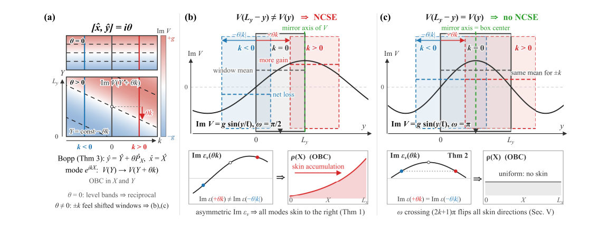
<figcaption class="paper-figure-caption"><b>Fig 1.</b> FIG. 1. Sliding-window mechanism of the NCSE and roadmap of this work. (a) Shear picture: both canvases show the (k, Y ) plane (horizontal axis: wave vector k along X; vertical axis: transverse coordinate Y ∈[0, Ly]), and the color at point (k, Y ) encodes the imaginary potential Im V (Y + θk) experienced at Y by the mode with momentum k (red: gain; blue: loss; see the color bar on the right). Top panel, θ = 0: the contour bands are horizontal (black dashed lines mark the contours), and the vertical cuts at any fixed k (blue/gray/red vertical lines) yield identical transverse potential profiles; the dispersion is reciprocal. Bottom panel, θ &gt; 0: the Bopp shift ˆy = ˆY + θ ˆPX shears momentum...</figcaption>
</figure>
<figure class="paper-figure-card">
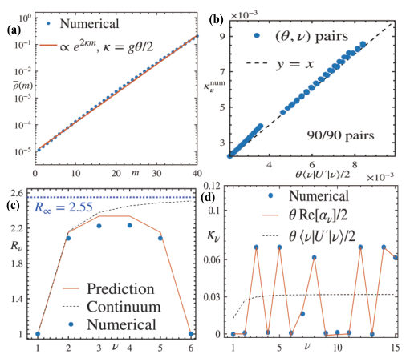
<figcaption class="paper-figure-caption"><b>Fig 2.</b> FIG. 2. Numerical verification of Theorem 1. (a) Linear imaginary potential V =igˆy (Nx=40, Ny=30, g=0.05, θ=5). The vertical axis is the eigenstate-averaged density along X, ¯ρ(m)≡ 1 Neig P</figcaption>
</figure>
<figure class="paper-figure-card">
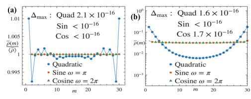
<figcaption class="paper-figure-caption"><b>Fig 3.</b> FIG. 3. Numerical verification of the exact protection by Theorem 2, for three symmetric potentials [blue circles: quadratic potential ig(Y −Ly/2)2; red squares: sine poten- tial with ω=π; green triangles: cosine potential with ω=2π], Nx=Ny=30. (a) Mild parameters, g=10−3 (both the weak- potential and adiabatic conditions are satisfied): the vertical axis is ¯ρ(m)/⟨¯ρ⟩(density normalized by its spatial mean, lin- ear scale). In the weak-potential regime the densities of all three potentials are nearly uniform, and normalizing to the mean renders the ∼1% shape differences discernible on a lin- ear scale; quadratic potential, θ=0.5; sine potential, θ=Ly/π; cosine potential, θ=Ly/(2π). (b)...</figcaption>
</figure>
<figure class="paper-figure-card">
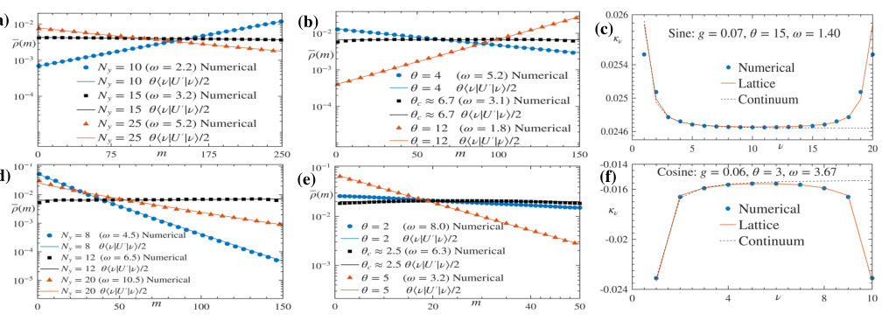
<figcaption class="paper-figure-caption"><b>Fig 4.</b> FIG. 4. Skin-direction reversal for periodic imaginary potentials and quantitative verification of κν. Square lattice (a0=b0=1), exact Peierls mapping (commensurability condition θ/ℓ=a0). In all density panels the horizontal axis is the X-direction site index m and the vertical axis is the eigenstate-averaged density ¯ρ(m) (semilogarithmic scale); circles/squares/triangles, numerical results; solid lines, ¯ρ(m) predicted by Theorem 1. In (c) and (f) the horizontal axis is the band index ν and the vertical axis is the inverse skin length κν. (a),(b) Direction flip for the sine potential V =ig sin(ˆy/ℓ): (a) fixed θ=5, g=0.03, Nx=250, varying Ny ∈{10, 15, 25} (ω=Ly/ℓ= 2.2, 3.2, 5.2), taking ω...</figcaption>
</figure>
</div>

<p><strong>Summary.</strong> The paper introduces the Noncommutative Skin Effect (NCSE), showing that spatial noncommutativity alone can induce boundary localization typically associated with gain/loss terms. By analyzing lattice models and deriving effective 1D Hamiltonians, it establishes rigorous criteria—particularly based on potential symmetry—for the existence of this effect.</p>
<p><strong>Why it may be interesting.</strong> This work provides a fundamental mechanism linking geometric properties of spacetime (noncommutativity) directly to observable quantum phenomena like topological edge states, which is highly relevant for designing synthetic dimensions in AMO platforms.</p>
<details>
<summary>Detailed structure</summary>
<p><strong>Main problem.</strong> To demonstrate that spatial noncommutativity can induce the Non-Hermitian Skin Effect (NHSE) without requiring an independent gain/loss term along the skin direction.</p>
<p><strong>Main result.</strong> The phenomenon, termed the noncommutative skin effect (NCSE), is characterized by a skin length inversely proportional to the noncommutativity parameter ($\kappa_
u \propto   heta$).</p>
<p><strong>Method.</strong> The analysis uses mathematical transformations (like the Bopp shift) and asymptotic expansions (Taylor/adiabatic approximations) on effective 1D Hamiltonians derived from the 2D noncommutative lattice model.</p>
<p><strong>Model / system.</strong> The system is a quantum mechanical model on a two-dimensional space where spatial coordinates do not commute, $[\hat{x}, \hat{y}] = i	heta$. The Hamiltonian involves kinetic terms and an imaginary potential $V(\hat{y})$.</p>
<p><strong>Key observables.</strong> Inverse skin length ($\kappa_
u$), spectral non-reciprocity ($\epsilon_
u(k) 
eq \epsilon_
u(-k)$), and the collective reversal of eigenstate direction at geometric 'flip points'.</p>
<p><strong>Important parameters / regimes.</strong> Noncommutativity parameter ($   heta$), lattice size ($L_x, L_y$), and potential strength/geometry.</p>
<p><strong>Assumptions / limitations.</strong> The analysis relies on approximations such as the adiabatic limit and Taylor truncation to derive solvable effective 1D equations from the full 2D problem.</p>
<p><strong>Figures summary.</strong> Figures illustrate the 'Sliding-window mechanism' showing momentum shearing into coordinate space, and numerical verification of exponential envelope localization ($\propto e^{	heta m}$) for various potentials.</p>
<p><strong>Paper structure.</strong> The paper progresses by first establishing the general noncommutative framework, deriving effective 1D models (Hatano-Nelson type), proving existence criteria based on potential symmetry, and finally applying these results to specific lattice potentials (quadratic, sine/cosine).</p>
</details>
<details>
<summary>Abstract</summary>
<p>In all known schemes for the non-Hermitian skin effect, the non-Hermitian ingredient that drives the skin localization, whether asymmetric hopping or gain and loss, is invariably introduced by hand as an independent model parameter along the skin direction. Here we show that when two spatial coordinates do not commute, the skin effect can break free of this paradigm: a gain-loss potential applied along one coordinate automatically generates non-reciprocity along the other through the coordinate noncommutativity, driving all eigenstates to pile up exponentially at a boundary. We term this phenomenon the noncommutative skin effect. The inverse skin length is proportional to the noncommutativity parameter and is given by an analytic formula, exact in the thermodynamic limit and verified by exact diagonalization of lattice models; the reflection symmetry of the imaginary potential furnishes an exact criterion for the presence or absence of the effect, valid rigorously for finite-size systems. For a sinusoidal imaginary potential, the skin direction of all eigenstates flips collectively at parameter points fixed purely by geometry. Because the flip point is independent of the potential strength, the reversal constitutes a zero-crossing measurement scheme intrinsically robust against systematic errors, from which the noncommutativity parameter can be extracted directly. The qualitative transition of the eigenstates from uniform to exponentially localized renders the effect a nonperturbative probe of spatial noncommutativity, and the Peierls-phase structure of its lattice model is in principle accessible to cold-atom synthetic dimensions, photonic resonators, and topolectrical circuits.</p>
</details>
<p><sub><a href="#top">↑ back to top</a></sub></p>

<p><a id="paper-2606.13318"></a></p>
<h3 id="exploring-exotic-spin-dependent-interactions-beyond-the-standard-model-theoretical-foundations-and-experimental-investigations"><a href="http://arxiv.org/abs/2606.13318v1">Exploring Exotic Spin-Dependent Interactions Beyond the Standard Model: Theoretical Foundations and Experimental Investigations</a></h3>
<p><strong>Authors:</strong> L. Y. Wu, H. Yan<br>
<strong>Type:</strong> both · <strong>Category:</strong> other · <strong>PDF:</strong> <a href="https://arxiv.org/pdf/2606.13318v1">https://arxiv.org/pdf/2606.13318v1</a><br>
<strong>Analysis basis:</strong> full PDF text, analyzed in chunks
<strong>Topic relevance:</strong> <code>exotic spin models in light-matter</code> <strong>3/5</strong> · <code>spintronics-quantum-optics interface</code> <strong>3/5</strong> · <code>analog quantum simulation</code> <strong>1/5</strong> · <code>quantum measurements</code> <strong>1/5</strong></p>
<div class="figure-strip-hint">↔ Scroll figures horizontally</div>
<div class="paper-figures-scroll">
<figure class="paper-figure-card">
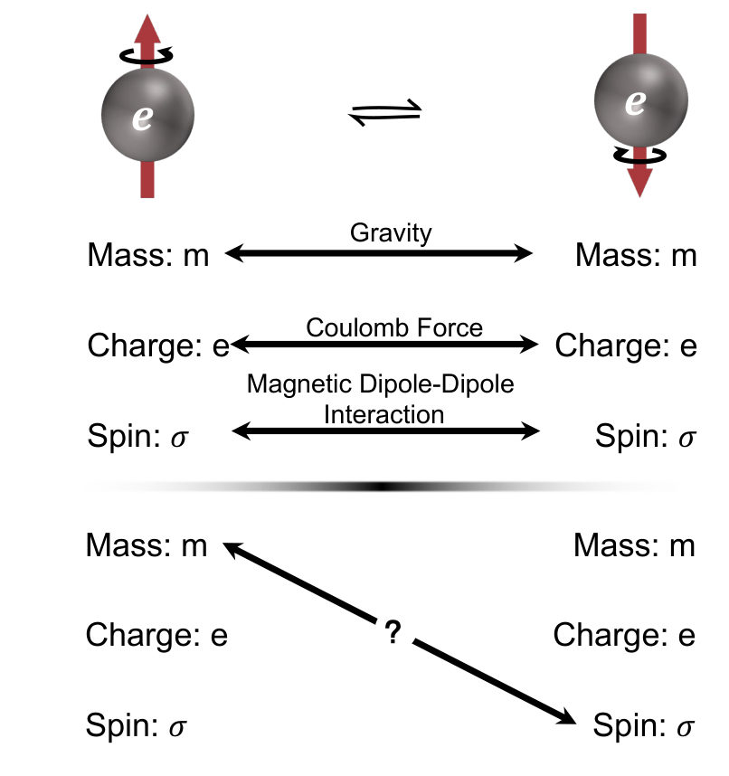
<figcaption class="paper-figure-caption"><b>Fig 1.</b> Figure 1. Schematic representations of particle interactions. The upper part of the figure illustrates conventional interactions between two fundamental particles, where like properties are coupled: gravity couples mass, the Coulomb force couples electric charge, and the magnetic dipole-dipole interaction couples spin. The lower part presents a hypothetical scenario in which a new interaction couples different fundamental properties, specifically the mass of one particle to the spin of another, such as the VSP interaction (6a). Such cross-property couplings, if they exist, would represent novel forms of fundamental interactions beyond the SM.</figcaption>
</figure>
<figure class="paper-figure-card">
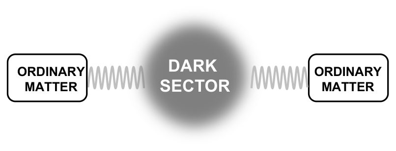
<figcaption class="paper-figure-caption"><b>Fig 2.</b> Figure 2. Detection strategy—Suppose ordinary matter is weakly coupled to the dark sector. In this case, extremely weak interactions may arise between ordinary objects. By performing precision measurements on ordinary matter, one can, in principle, infer the existence or absence of the dark sector.</figcaption>
</figure>
<figure class="paper-figure-card">
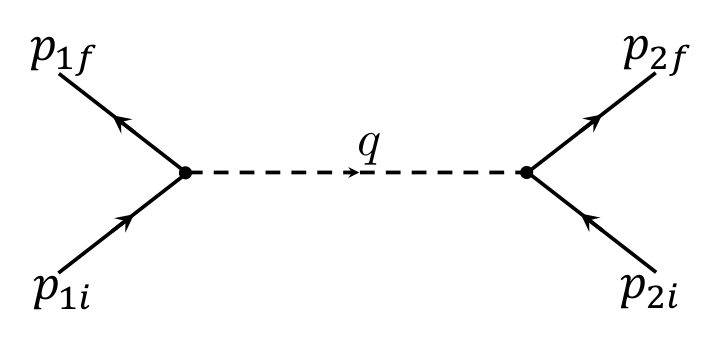
<figcaption class="paper-figure-caption"><b>Fig 3.</b> Figure 3. Representative tree-level Feynman diagram illustrating the interaction between two fermions via the exchange of a new mediator particle. The symbols p1i (p1f) and p2i (p2f) denote the initial (final) four-momenta of fermions 1 and 2, respectively, while q represents the four-momentum transferred by the virtual mediator.</figcaption>
</figure>
<figure class="paper-figure-card">
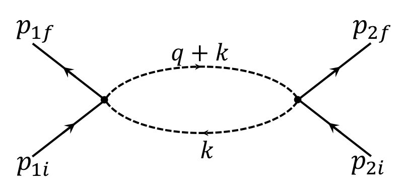
<figcaption class="paper-figure-caption"><b>Fig 4.</b> Figure 4. The loop-level Feynman diagram of two fermions interacting through exchanging two new particles. The p1i (p1f) and p2i (p2f) are the incoming (outgoing) four-momentum of particles 1 and 2, respectively. The transferred four-momentum carried by the virtual particle is denoted by q, while k represents the loop integration variable.</figcaption>
</figure>
<figure class="paper-figure-card">
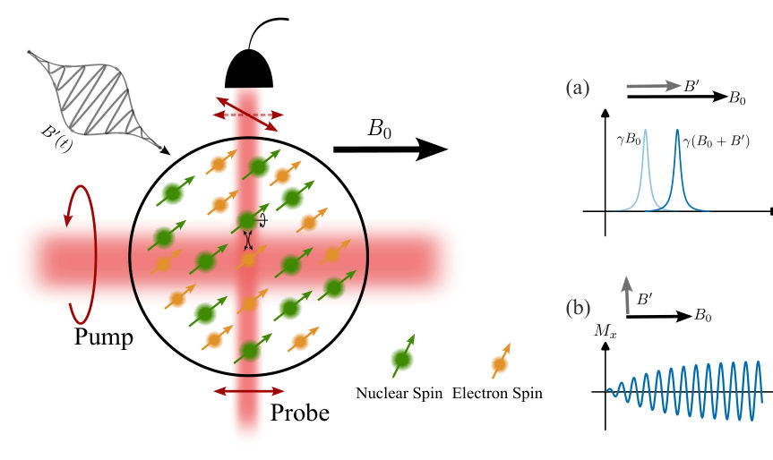
<figcaption class="paper-figure-caption"><b>Fig 5.</b> Figure 5. A schematic illustration of the NMR-based detection method for exotic spin-dependent interactions. The effective magnetic field ⃗B′(t) generated by the exotic potential perturbs the Larmor precession of polarized nuclear spins in the holding field ⃗B0. Depending on its orientation and frequency, ⃗B′(t) can either shift the precession frequency or, under resonant conditions, induce transverse oscillations of the spins. The resulting precession signals are typically detected using an alkali-metal magnetometer (as illustrated) or other high-sensitivity sensors, such as SQUIDs.</figcaption>
</figure>
</div>

<p><strong>Summary.</strong> This review provides a comprehensive theoretical and experimental overview of exotic spin-dependent interactions beyond the Standard Model. It focuses particularly on couplings mediated by light particles like ALPs and effects arising from Lorentz/CPT violation. The paper synthesizes knowledge across multiple detection platforms, guiding future searches for physics beyond our current understanding.</p>
<p><strong>Why it may be interesting.</strong> While not strictly focused on quantum information or cold atoms as primary subjects, the paper heavily relies on advanced quantum sensing techniques (atomic magnetometers, spin precession) to probe fundamental symmetries and forces, making it highly relevant to AMO physics frontiers.</p>
<details>
<summary>Detailed structure</summary>
<p><strong>Main problem.</strong> The paper investigates exotic spin-dependent interactions beyond the Standard Model (SM) to address fundamental issues like the strong CP problem and the nature of dark matter.</p>
<p><strong>Main result.</strong> It systematically reviews theoretical frameworks for these novel couplings, providing a roadmap for experimentalists to constrain parameters related to light mediators like Axion-Like Particles (ALPs).</p>
<p><strong>Method.</strong> The approach combines deriving theoretical Lagrangians for various spin-dependent interactions with reviewing constraints derived from high-precision measurements on atomic and nuclear spins.</p>
<p><strong>Model / system.</strong> The focus is on exotic couplings mediated by light particles (e.g., ALPs) or arising from extensions to General Relativity, such as those involving spacetime torsion or Lorentz/CPT violation. Experimental platforms include comagnetometers, atomic magnetometers, and molecular hydrogen systems.</p>
<p><strong>Key observables.</strong> Spin precession rates, frequency shifts in comagnetometers, electric dipole moments (EDMs), and coupling constants for exotic forces ($\chi, d_e$, etc.).</p>
<p><strong>Important parameters / regimes.</strong> ALP masses ($m_a$), interaction strengths ($f_a$), SME coefficients ($  ilde{b}_w^J,    ilde{d}_w^J$), and characteristic energy/length scales (mesoscopic to macroscopic).</p>
<p><strong>Assumptions / limitations.</strong> The analysis relies on low-energy approximations for light mediators and systematic classification schemes (e.g., based on spin order and gradient order) to manage the complexity of BSM physics.</p>
<p><strong>Figures summary.</strong> Figures schematically illustrate novel interaction couplings, detection strategies involving ordinary matter interacting with a dark sector, and Feynman diagrams showing ALP mediation between fermions.</p>
<p><strong>Paper structure.</strong> The review progresses from outlining theoretical foundations for exotic spin-dependent interactions (ALPs, SME) to systematically classifying these interactions based on mathematical structure. It then details the experimental efforts and constraints derived from various precision measurements across different physical systems.</p>
</details>
<details>
<summary>Abstract</summary>
<p>New interactions mediated by novel particles propose solutions to several important questions in modern physics. Axions serve as examples of such particles; they are lightweight and interact weakly with ordinary matter. This category of particles, including those similar to axions-termed Axion-Like Particles (ALPs)-arises from diverse theoretical frameworks, such as the Peccei-Quinn mechanism addressing the strong CP problem, string theory, and spontaneous supersymmetry breaking. Given their light mass and weak coupling, ALPs are also possible candidates for cold dark matter. Introducing these new interactions mediated by novel particles not only tackles several challenges in modern physics but also raises a crucial question: Are there undiscovered interactions beyond the Standard Model? Many of the interactions predicted by these theories are spin-dependent, which is the primary focus of this review. In this review, we first outline the theoretical foundations for investigating exotic spin-dependent interactions, highlighting their importance in various models beyond the Standard Model. We examine the potential roles of new lightweight particles in mediating these interactions, which may enhance our understanding of dark matter. Relevant formulas derived from theoretical models are included to support experimental investigations. Following this theoretical framework, we conduct a detailed review of recent experimental efforts to detect these exotic interactions. A systematic review of current constraints on these interactions is presented, along with an assessment of various detection approaches.</p>
</details>
<p><sub><a href="#top">↑ back to top</a></sub></p>

<p><a id="paper-2606.13541"></a></p>
<h3 id="overview-of-the-theory-of-extremely-correlated-fermi-liquids"><a href="http://arxiv.org/abs/2606.13541v1">Overview of the Theory of Extremely Correlated Fermi Liquids</a></h3>
<p><strong>Authors:</strong> B Sriram Shastry<br>
<strong>Type:</strong> theory · <strong>Category:</strong> strongly correlated electrons · <strong>PDF:</strong> <a href="https://arxiv.org/pdf/2606.13541v1">https://arxiv.org/pdf/2606.13541v1</a><br>
<strong>Analysis basis:</strong> full PDF text, analyzed in chunks
<strong>Topic relevance:</strong> <code>Keldysh / 2PI / non-Gaussian methods</code> <strong>3/5</strong> · <code>analog quantum simulation</code> <strong>2/5</strong> · <code>Kondo &amp; dissipative impurity</code> <strong>1/5</strong> · <code>methods for driven-dissipative</code> <strong>1/5</strong></p>
<div class="figure-strip-hint">↔ Scroll figures horizontally</div>
<div class="paper-figures-scroll">
<figure class="paper-figure-card">
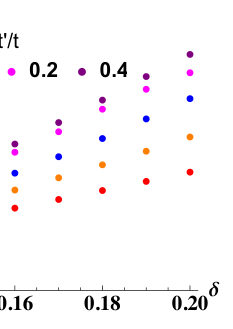
<figcaption class="paper-figure-caption"><b>Fig 1.</b> Figure 1: The quasiparticle weight Z versus the hole density δ for different values of t′/t within ECFL</figcaption>
</figure>
<figure class="paper-figure-card">
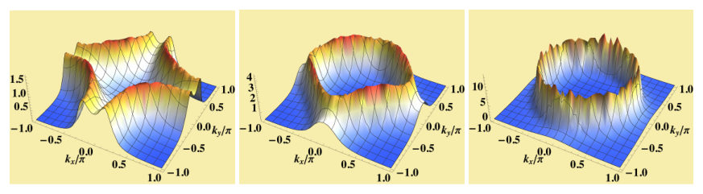
<figcaption class="paper-figure-caption"><b>Fig 2.</b> Figure 2: (L-R) With T=63 K and hole concentration δ = 0.15, the ⃗k variation over the Brillouin zone of the maximal</figcaption>
</figure>
<figure class="paper-figure-card">
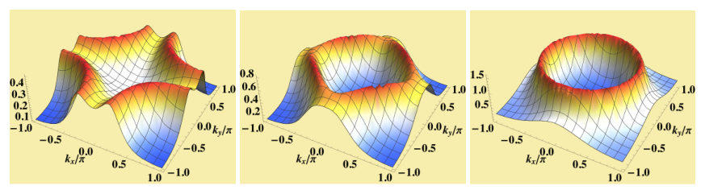
<figcaption class="paper-figure-caption"><b>Fig 3.</b> Figure 3: (L-R) With a slightly higher T=210 K and δ = 0.15, the ⃗k variation over the Brillouin zone of the maximal spectral</figcaption>
</figure>
<figure class="paper-figure-card">
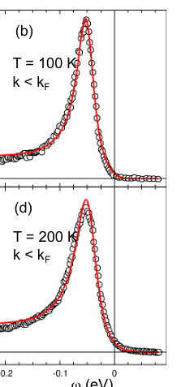
<figcaption class="paper-figure-caption"><b>Fig 4.</b> Figure 4: The spectral intensity I ∝A(k, ω) multiplied by the Fermi function f(ω), from experiments</figcaption>
</figure>
<figure class="paper-figure-card">
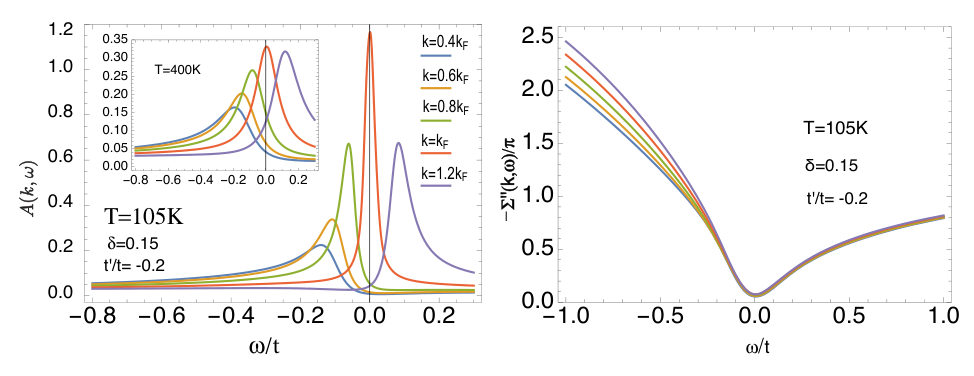
<figcaption class="paper-figure-caption"><b>Fig 5.</b> Figure 5: Hole doping with J/t=0.17and t= 0.45eV from [36] Left: The ⃗k and T dependence of the spectral function A(⃗k, ω)</figcaption>
</figure>
</div>

<p><strong>Summary.</strong> This paper reviews the Extremely Correlated Fermi Liquid (ECFL) theory as a comprehensive framework for analyzing highly correlated electron systems like cuprate superconductors. It details how this theory handles the $t$-$J$ model to predict key transport and spectral properties, such as density-dependent resistivity and vanishing quasiparticle weight. The work provides quantitative comparisons between these theoretical predictions and extensive experimental data from single-layer high-$T_c$ materials.</p>
<p><strong>Why it may be interesting.</strong> The rigorous theoretical development of ECFL theory provides a sophisticated many-body approach that attempts to bridge the gap between simple models ($t$-$J$) and complex experimental observations in strongly correlated materials, offering insights into emergent quantum behavior beyond standard Fermi liquid descriptions.</p>
<details>
<summary>Detailed structure</summary>
<p><strong>Main problem.</strong> The paper addresses understanding the physics of extremely strongly interacting electrons, particularly relevant for interpreting high-temperature superconductivity in cuprates.</p>
<p><strong>Main result.</strong> The Extremely Correlated Fermi Liquid (ECFL) theory successfully predicts key features like a vanishing quasiparticle weight near half-filling and provides consistent theoretical frameworks for analyzing resistivity and spectral functions across various doping levels.</p>
<p><strong>Method.</strong> The core method involves developing the ECFL framework by systematically expanding in a parameter $\lambda$ within the $t$-$J$ model Hamiltonian, ensuring compliance with the Luttinger-Ward theorem.</p>
<p><strong>Model / system.</strong> The primary system is the single-layer High-$T_c$ cuprate superconductor, modeled using the $t$-$J$ Hamiltonian derived from the Hubbard model in the strong correlation limit ($U \gg W$).</p>
<p><strong>Key observables.</strong> Resistivity $
ho(T)$, quasiparticle weight ($Z$), spectral function $A(\mathbf{k}, \omega)$, and Hall conductivity ($\sigma_{xy}$).</p>
<p><strong>Important parameters / regimes.</strong> Hole doping ($\delta$), temperature ($T$), hopping ratios ($t'/t$), and the correlation strength (approaching Mott limit).</p>
<p><strong>Assumptions / limitations.</strong> The theory relies on systematic approximations in powers of $\lambda$ and assumes that enforcing Luttinger-Ward compliance provides the correct physical solution class.</p>
<p><strong>Figures summary.</strong> Figures compare theoretical predictions for resistivity ($
ho(T)$) and ARPES spectral features (kinks, peak temperature dependence) against experimental data from various cuprate families (LSCO, Bi2212, etc.).</p>
<p><strong>Paper structure.</strong> The paper reviews the ECFL theory framework by first establishing its connection to the $t$-$J$ model, then detailing the mathematical procedure involving path integrals and self-energies ($\Psi, \Phi'$), followed by applying this formalism to calculate transport (resistivity, Hall response) and spectral properties.</p>
</details>
<details>
<summary>Abstract</summary>
<p>The Extremely Correlated Fermi Liquids (ECFL) theory is reviewed as a framework for understanding the $t$-$J$ model in metallic systems close to the Mott insulating limit. This overview presents the underlying ideas and the resulting equations in a form accessible to nonexperts. We compare theoretical results with all available resistivity data for single-layer High-T$_{c}$ systems, and with some spectral data. The highlighted results include a density dependent quasilinear T-dependence in resistivity, an unusually small quasiparticle weight, and distinct low-temperature emergent scales that dominate transport, thermodynamics and spectral properties of single-layer High T$_c$ systems. Suggestions are made for further experiments to probe the physics of these challenging quantum many-body systems.</p>
</details>
<p><sub><a href="#top">↑ back to top</a></sub></p>

<p><a id="paper-2606.13667"></a></p>
<h3 id="semi-device-independent-certification-for-nonlocality-without-entanglement"><a href="http://arxiv.org/abs/2606.13667v1">Semi-Device-Independent Certification for Nonlocality without Entanglement</a></h3>
<p><strong>Authors:</strong> Hanwool Lee, Joonwoo Bae<br>
<strong>Type:</strong> theory · <strong>Category:</strong> quantum information and computing · <strong>PDF:</strong> <a href="https://arxiv.org/pdf/2606.13667v1">https://arxiv.org/pdf/2606.13667v1</a><br>
<strong>Analysis basis:</strong> full PDF text, analyzed in chunks
<strong>Topic relevance:</strong> <code>quantum measurements</code> <strong>3/5</strong> · <code>entanglement &amp; information structure</code> <strong>2/5</strong> · <code>correlated / nonlocal dissipation</code> <strong>1/5</strong> · <code>measurement-induced transitions</code> <strong>1/5</strong></p>
<div class="figure-strip-hint">↔ Scroll figures horizontally</div>
<div class="paper-figures-scroll">
<figure class="paper-figure-card">
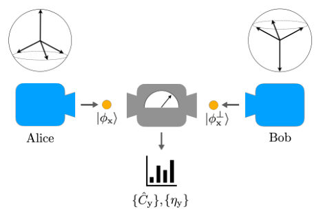
<figcaption class="paper-figure-caption"><b>Fig 1.</b> Figure 1. The scenario of comparing the capabilities of measurements in GLOBAL and SEP is shown. Alice and Bob prepare product states by LOCC, such as antiparallel states in Eq. (3), and send them to a device that realizes a measurement in GLOBAL or SEP. Specifically, two parties apply a measurement to maximize a confidence, see Eq. (1), in which the strategy is to rely only on detected events. A gap between measurements in GLOBAL and SEP exists if an optimal measurement is GLOBAL but not SEP. The gap can also be certified given the outcome rates in Eq.(7).</figcaption>
</figure>
<figure class="paper-figure-card">
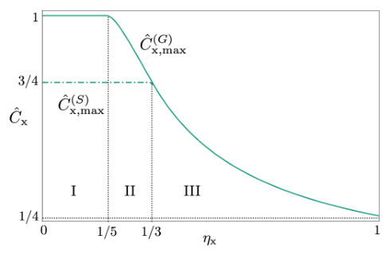
<figcaption class="paper-figure-caption"><b>Fig 2.</b> Figure 2. Given an outcome rate ηx, the certifiable MC for antiparallel states in Eq. (3) is shown. In a noiseless state preparation, the certifiable MC with SEP is 3/4. For an outcome rate ηx &lt; 1/3, NLWE can be certified if ˆCx &gt; 3/4 (region I and II). For an outcome rate ηx ≤1/5, the gap ∆x is maximal (region I). When outcomes are so frequent ηx ≥1/3, NLWE cannot be certified (region III).</figcaption>
</figure>
<figure class="paper-figure-card">
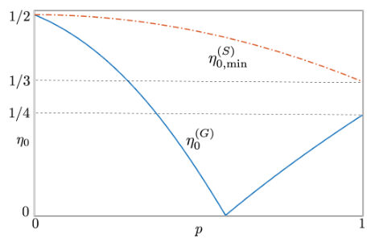
<figcaption class="paper-figure-caption"><b>Fig 3.</b> Figure 3. The rate of inconclusive outcomes η(G) 0 for a noisy POVM in Eq. (22) (solid) is strictly lower than the rate by SEP (dotted) whenever p &gt; 0. Note that when θ = π/12, at which p ≈0.58, POVM elements {f M (G) x }4 x=1 form a complete measurement, i.e., η(G) 0 = 0.</figcaption>
</figure>
</div>

<p><strong>Summary.</strong> The paper develops a semi-device-independent method to certify Nonlocality without Entanglement (NLWE) by comparing the maximum confidence achievable through global versus separable measurements. Using SDPs, it demonstrates that a measurable gap exists for antiparallel states, which can be verified even with noisy detectors or by analyzing inconclusive outcomes. This provides a robust, experimentally feasible test for quantum nonlocality.</p>
<p><strong>Why it may be interesting.</strong> This work provides a highly rigorous, experimentally relevant protocol for certifying fundamental quantum resources like nonlocality using only measurement statistics, which is crucial for practical quantum information applications.</p>
<details>
<summary>Detailed structure</summary>
<p><strong>Main problem.</strong> The work investigates Nonlocality without Entanglement (NLWE) by developing a semi-device-independent (sDI) certification method based on maximum-confidence discrimination (MCM). It aims to establish NLWE using only measurement outcomes, making it robust against detector inefficiencies.</p>
<p><strong>Main result.</strong> A measurable gap exists between the confidence achievable with global measurements and that achievable with separable measurements for antiparallel states. This gap can be certified using outcome rates or by analyzing inconclusive outcome rates, even in the presence of noise.</p>
<p><strong>Method.</strong> The analysis relies heavily on formulating optimization problems as Semidefinite Programs (SDPs) to determine the maximum confidence ($\hat{C}$) under global versus separable measurement constraints. The certification is achieved by comparing these bounds.</p>
<p><strong>Model / system.</strong> The study analyzes quantum state ensembles, specifically focusing on antiparallel and parallel qubit states subjected to local depolarizing noise. The measurements are characterized by Global (GLOBAL) or Separable (SEP) Positive Operator-Valued Measures (POVMs).</p>
<p><strong>Key observables.</strong> Maximum Confidence ($C_{x,	ext{max}}$), Certifiable Confidence ($\hat{C}$), Outcome Rates ($\eta_x$), and the rate of inconclusive outcomes ($\eta_0$).</p>
<p><strong>Important parameters / regimes.</strong> Noise parameter $p$, outcome rates $\eta_x$, and optimization parameters like Lagrange multipliers ($\lambda$).</p>
<p><strong>Assumptions / limitations.</strong> The framework assumes that maximum-confidence measurements only rely on detected measurement outcomes, making it robust to non-unit detection efficiencies. Separability is tested by comparing global vs. product operator constraints.</p>
<p><strong>Figures summary.</strong> Figures compare the certifiable MCM for antiparallel states versus outcome rates, showing distinct regimes (I, II, III) where NLWE can be certified. Another figure compares inconclusive outcome rates ($\eta(G)_0$ vs $\eta(S)_0$) to demonstrate the gap.</p>
<p><strong>Paper structure.</strong> The paper systematically develops the MCM framework using SDPs, first establishing the theoretical gap for ideal states (Chunk 1). It then generalizes this to a certifiable, device-independent setting by incorporating outcome rates and noise parameters (Chunks 2, 3, 4), finally exploring certification via inconclusive outcomes (Chunk 5).</p>
</details>
<details>
<summary>Abstract</summary>
<p>In this work, we investigate maximum-confidence discrimination, which encompasses minimum-error and unambiguous discrimination, for ensembles of separable states by considering global and separable measurements. We demonstrate that global measurements outperform separable ones, thereby establishing nonlocality without entanglement (NLWE) in terms of confidence in a detection event, a fine-grained state-identification strategy that maximizes the probability of a correct guess given a measurement outcome. Conversely, verifying achievable confidence in measurement outcomes can certify global measurements, namely, semi-device-independent certification of NLWE. Our results make it feasible to experimentally demonstrate NLWE using present-day quantum measurement devices, even with non-unit detection efficiencies, since maximum-confidence measurements rely only on detected measurement outcomes.</p>
</details>
<p><sub><a href="#top">↑ back to top</a></sub></p>

<p><a id="paper-2606.12520"></a></p>
<h3 id="charting-the-emergent-low-dimensional-manifold-of-quantum-materials"><a href="http://arxiv.org/abs/2606.12520v1">Charting the emergent low-dimensional manifold of quantum materials</a></h3>
<p><strong>Authors:</strong> Jason Z. Kim, Omri Lesser, Debanjan Chowdhury<br>
<strong>Type:</strong> theory · <strong>Category:</strong> disordered systems and neural networks · <strong>PDF:</strong> <a href="https://arxiv.org/pdf/2606.12520v1">https://arxiv.org/pdf/2606.12520v1</a><br>
<strong>Analysis basis:</strong> full PDF text, analyzed in chunks
<strong>Topic relevance:</strong> <code>methods for driven-dissipative</code> <strong>3/5</strong> · <code>Keldysh / 2PI / non-Gaussian methods</code> <strong>1/5</strong> · <code>analog quantum simulation</code> <strong>1/5</strong> · <code>driven-dissipative phase transition</code> <strong>1/5</strong></p>
<div class="figure-strip-hint">↔ Scroll figures horizontally</div>
<div class="paper-figures-scroll">
<figure class="paper-figure-card">
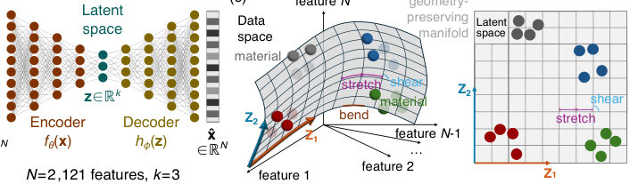
<figcaption class="paper-figure-caption"><b>Fig 1.</b> FIG. 1. Featurization, ΓAE, and geometry preserving manifolds. (a) Up to third-order graphs are used to include features that are products of atomic properties (see Table I) of each node. (b) Data (x) is compressed to z in the latent space by the encoder neural network, followed by a decoder neural network to minimize the difference between the reconstructed data (ˆx) and x, while regulating the geometry (see Appendix B). (c) The Γ-autoencoder (ΓAE) constructs a geometry-preserving, low-dimensional manifold in feature space (left), using the latent space (right) as its coordinate system, so that distances and angles are preserved and the manifold bends smoothly along latent-space directions.</figcaption>
</figure>
<figure class="paper-figure-card">
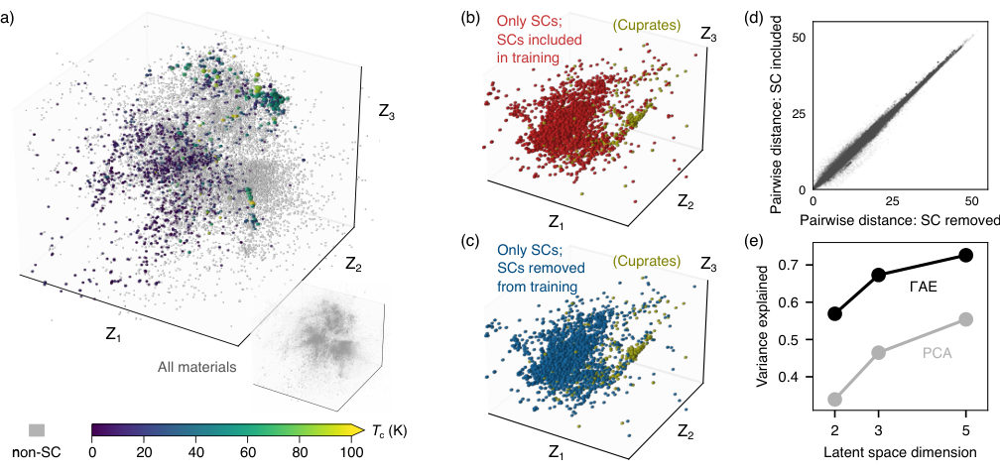
<figcaption class="paper-figure-caption"><b>Fig 2.</b> FIG. 2. Three-dimensional embedding. (a) The embedding for all ICSD materials features three main clusters (see inset), with a clear organization in terms of their superconducting Tc. (b–c) Embedding of only the superconducting materials when they are (b) included vs. (c) excluded from the ΓAE training process. The autoencoder consistently embeds the superconducting materials, including individual families (e.g. cuprates) in the same location without even encountering them during training. (d) Pairwise distance between each superconductor and 400 randomly selected materials in the two embeddings in (b) and (c) demonstrates their high correlation (Pearson r = 0.998). (e) Comparison of the...</figcaption>
</figure>
<figure class="paper-figure-card">
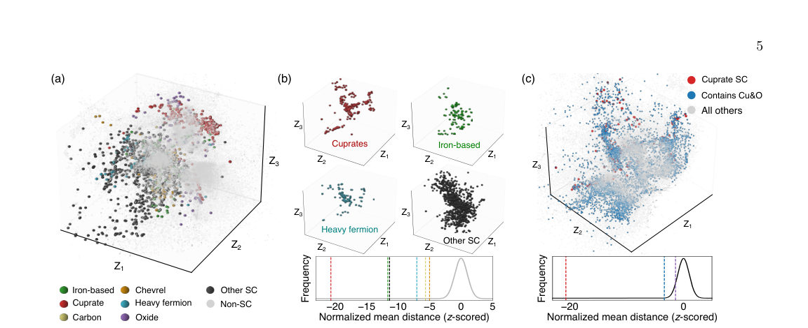
<figcaption class="paper-figure-caption"><b>Fig 3.</b> FIG. 3. Geometric clustering of superconducting families. (a) Superconducting materials colored by family across the embedding. (b) The z &lt; −2 scores for the pairwise distance, including for the “other” (i.e. conventional) superconductors, demonstrates their significant clustering tendencies beyond chemical similarity. (c) Clustering of superconducting cuprates (red dots) beyond compounds containing Cu and O (blue dots) The in-group pairwise distance normalized by the group size is statistically significantly lower for superconducting cuprates compared to the latter. The purple dashed line is the z-score for cuprate superconductor distances relative to the distribution of distances of all...</figcaption>
</figure>
<figure class="paper-figure-card">
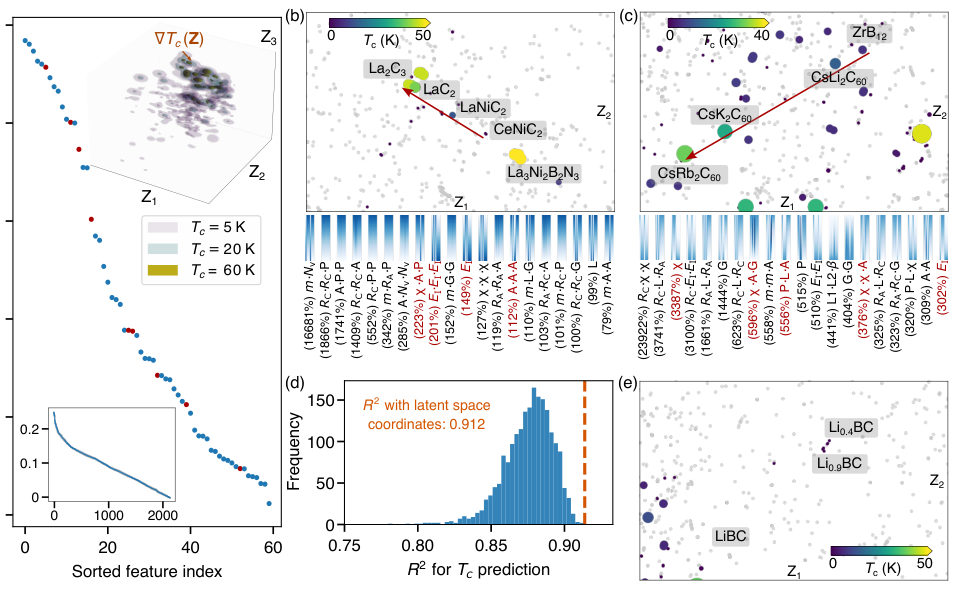
<figcaption class="paper-figure-caption"><b>Fig 4.</b> FIG. 4. Geometric interpretability of superconducting Tc (a) Distribution of Cohen’s d values for the correlation between microscopic features and ∇Tc (top inset) defined in latent space; only ≈60 features have d &gt; 0.2 (bottom inset). Local environment of superconducting clusters and trajectories of increasing ∇Tc obtained by slicing along the Z3 axis and projecting onto the Z1–Z2 plane in (b) and (c). The colored dots and their sizes represent superconducting Tc. The trajectories associated with the top 20 decoded latent space features (based on Cohen’s d value; see red arrow) are highlighted in bottom panel. (d) Gaussian process prediction model for Tc based on the three latent space...</figcaption>
</figure>
<figure class="paper-figure-card">
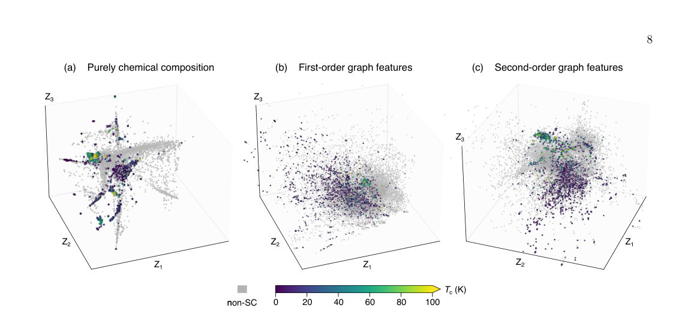
<figcaption class="paper-figure-caption"><b>Fig 5.</b> FIG. 5. Clustering complexity across featurizations. Three-dimensional embeddings for (a) Purely compositional features (see Ref. [27]). (b) First-order graph-based features. (c) First and second-order graph-based features.</figcaption>
</figure>
</div>

<p><strong>Summary.</strong> This work introduces a novel machine learning framework using $\Gamma$-autoencoders to map the vast, complex space of crystalline materials onto a low-dimensional geometric manifold. By analyzing this embedding, the authors reveal emergent organizing principles that govern macroscopic properties like superconductivity. This provides an unsupervised and highly predictive tool for designing new quantum materials based purely on structural descriptors.</p>
<p><strong>Why it may be interesting.</strong> While focused on condensed matter, the core methodology—using deep generative models (autoencoders) combined with differential geometry to extract low-dimensional physical invariants from high-dimensional data—is highly relevant for modeling complex quantum many-body systems where explicit Hamiltonians are intractable.</p>
<details>
<summary>Detailed structure</summary>
<p><strong>Main problem.</strong> The challenge is developing an organizing framework for crystalline materials that can predict macroscopic quantum behavior, such as superconductivity, from their complex microscopic structure.</p>
<p><strong>Main result.</strong> A low-dimensional geometric manifold was successfully constructed in the feature space, demonstrating that only a few combinations of microscopic descriptors govern key properties like the critical temperature (Tc).</p>
<p><strong>Method.</strong> The study employs unsupervised nonlinear dimensionality reduction using a specialized $\Gamma$-autoencoder ($\Gamma$AE) trained on high-dimensional graph features derived from crystal structures.</p>
<p><strong>Model / system.</strong> The physical system is crystalline materials, analyzed using feature vectors built from atomic and geometric properties (up to third-order clusters) sourced from the Inorganic Crystal Structure Database (ICSD).</p>
<p><strong>Key observables.</strong> Critical temperature ($T_c$), low-dimensional latent coordinates ($\{Z_j\}$), clustering significance (z-score), and predictive accuracy ($R^2$ for $T_c$).</p>
<p><strong>Important parameters / regimes.</strong> Feature dimensionality (up to 2,121 dimensions), regularization parameters ($\alpha, \gamma$) in the loss function, and latent space dimension ($k=3$ used in examples).</p>
<p><strong>Assumptions / limitations.</strong> The underlying physical organization of materials can be captured by a smooth, low-dimensional manifold structure that is preserved during nonlinear dimensionality reduction.</p>
<p><strong>Figures summary.</strong> Figures illustrate the construction of the geometry-preserving manifold, show how superconducting families cluster significantly within this embedding, and demonstrate the predictive power of latent coordinates for $T_c$.</p>
<p><strong>Paper structure.</strong> The paper progresses from identifying the need for a structural organizing principle to detailing the $\Gamma$AE methodology, demonstrating successful clustering of SCs, and finally quantifying feature importance by correlating gradients in the latent space with variations in $T_c$.</p>
</details>
<details>
<summary>Abstract</summary>
<p>The periodic table of elements transformed chemistry by revealing simple organizing principles underlying atomic behavior. Despite decades of effort, no analogous framework has emerged for crystalline materials -- their microscopic complexity and vast configurational space have defied reduction to fundamental organizing principles. Current databases catalog thousands of synthesized materials, but extracting predictive, interpretable models from this wealth of data remains a formidable challenge. Here we demonstrate that the materials landscape possesses a hidden geometric organization that can be unveiled through unsupervised nonlinear dimensionality reduction. Applying differential geometry techniques to the Inorganic Crystal Structure Database (ICSD), we reveal that just a few combinations of microscopic descriptors capture the vast majority of variance in material properties. This low-dimensional embedding autonomously segregates superconductors from ordinary materials and further distinguishes superconducting families in ways that transcend chemical similarity alone. Remarkably, the discovered geometric organization directly governs critical temperatures ($T_c$) across diverse superconducting families, enabling accurate $T_c$ predictions without any knowledge of the pairing mechanism. Our approach uncovers emergent organizing principles that control macroscopic quantum behavior, offering a new paradigm in how we build models of complex quantum materials directly from experimental data.</p>
</details>
<p><sub><a href="#top">↑ back to top</a></sub></p>

<p><a id="paper-2606.13447"></a></p>
<h3 id="quantum-optical-photoelectron-interferometry"><a href="http://arxiv.org/abs/2606.13447v1">Quantum optical photoelectron interferometry</a></h3>
<p><strong>Authors:</strong> Jonathan Dubois, Viviane Cotte, Richard Taïeb, Camille Lévêque, Jérémie Caillat, Pranshu Dave, Pascal Salières, David Bresteau, Charles Bourassin-Bouchet, Anne L'Huillier, David Busto<br>
<strong>Type:</strong> theory · <strong>Category:</strong> other · <strong>PDF:</strong> <a href="https://arxiv.org/pdf/2606.13447v1">https://arxiv.org/pdf/2606.13447v1</a><br>
<strong>Analysis basis:</strong> full PDF text, analyzed in chunks
<strong>Topic relevance:</strong> <code>interference shaping light</code> <strong>3/5</strong> · <code>Keldysh / 2PI / non-Gaussian methods</code> <strong>1/5</strong> · <code>methods for driven-dissipative</code> <strong>1/5</strong> · <code>quantum optics experiment</code> <strong>1/5</strong></p>
<div class="figure-strip-hint">↔ Scroll figures horizontally</div>
<div class="paper-figures-scroll">
<figure class="paper-figure-card">
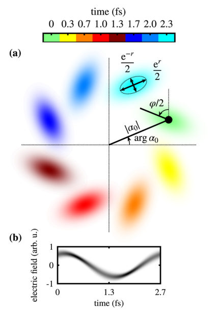
<figcaption class="paper-figure-caption"><b>Fig 1.</b> FIG. 1. (a) The Wigner distribution W(α) of a squeezed coherent state of light [see Eq. (48a)], represented at suc- cessive instants over one optical cycle of approximately 2.7 fs (laser wavelength of 800 nm), as a function of the real and imaginary parts of α. It displays the geometry of the coherent part characterized by α0 and the squeezing ampli- tude ζ = reiφ. The coherent-state limit corresponds to ζ = 0. We use 10 photons. The coherent part is ∣α0∣= 3.15 and arg α0 = 0.4 rad. The squeezing ratio is r ∼0.37 with a phase φ = 2.37 rad. (b) Corresponding distribution of the electric field Fα(t) = ⟨α∣F(t) ∣α⟩, with F(t) the electric field operator in the interaction picture and a coherent...</figcaption>
</figure>
<figure class="paper-figure-card">
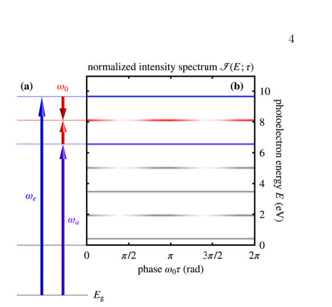
<figcaption class="paper-figure-caption"><b>Fig 2.</b> FIG. 2. (a) Illustration of the RABBIT scheme in the regime of quantum light. Two types of quantum paths contribute to the photoelectron spectrum: one-photon absorption, giv- ing rise to main bands (e.g. at frequencies ωe and ωa, shown in blue and purple, respectively), and two-photon transitions involving an additional photon of frequency ω0, giving rise to sidebands (e.g. the one shown in red between the two highlighted harmonic bands). (b) Photoelectron intensity spectrum obtained from the solution of the TDSE (see Ap- pendix C for details) as a function of τ and the energy of the photoelectron at the detector E, with τ the delay between the harmonic and infrared pulses. Other harmonics...</figcaption>
</figure>
<figure class="paper-figure-card">
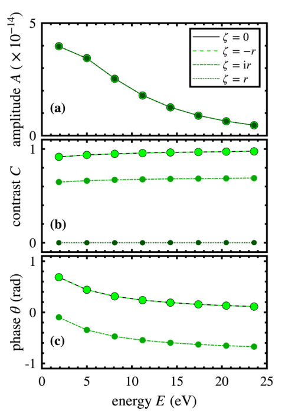
<figcaption class="paper-figure-caption"><b>Fig 3.</b> FIG. 4. Comparison of the (a) amplitude, (b) contrast and (c) phase of the RABBIT signal as a function of the sideband energy. The solid lines are obtained from the TDPT [Eq. (23)] and the colored circles from the TDSE. The parameters are the same as in Fig. 3, i.e. r ∼19, the number of photons is n0 = 1016 and arg α0 = 0. Note that in (a) the solid curves were scaled by 0.7729, as in Fig. 3. In (c) the phase is not displayed for ζ = r since the contrast is zero.</figcaption>
</figure>
<figure class="paper-figure-card">
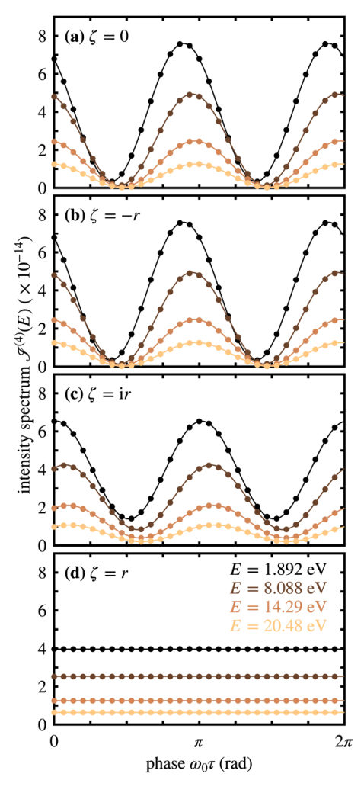
<figcaption class="paper-figure-caption"><b>Fig 4.</b> FIG. 3. Comparison of the intensity spectrum obtained from the TDPT (solid lines) [Eq. (23)] and the TDSE (colored cir- cles). Note that all the solid curves are scaled by 0.7729 in order to take into account the finite-pulse duration. The num- ber of photons is n0 = 1016 and arg α0 = 0. The different sub- plots correspond to different squeezing amplitudes: ε0 = 0 in (a), corresponding to a coherent state with ζ = 0, and ε0 = 1/2 in subsequent cases (corresponding to r ∼19). (b) φ = π cor- responding to a phase-squeezed state (ζ = −r), (c) φ = π/2 corresponding to an intermediate phase (ζ = i r), and (d) φ = 0 corresponding to an amplitude-squeezed state (ζ = r).</figcaption>
</figure>
<figure class="paper-figure-card">
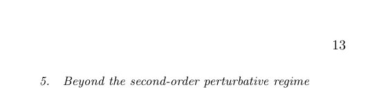
<figcaption class="paper-figure-caption"><b>Fig 5.</b> Figure 7 presents the RABBIT sidebands obtained us- ing TDPT (solid lines) and TDSE (colored circles), analo- gous to Fig. 3, but for a higher infrared photon occupancy of n0 = 1018. At this photon number, the TDPT and TDSE results no longer exhibit perfect overlap. In par- ticular, the discrepancy is more pronounced for squeezed states (panels b–c) than for the coherent state (panel a). This deviation arises because the Wigner distributions for squeezed states span several orders of magnitude in the effective field intensity. For example, while the coher- ent state is localized around an intensity of 1011 W cm−2, the squeezed states extend into the 1012 W cm−2 regime. Consequently, the...</figcaption>
</figure>
</div>

<p><strong>Summary.</strong> The paper develops a comprehensive quantum theoretical framework to analyze photoelectron interferometry using RABBIT spectroscopy. It demonstrates that the measured spectral features (amplitude, contrast, and phase) are not merely determined by the mean intensity but directly map onto higher-order correlation functions of the driving light field. This provides a powerful tool for probing the non-classical nature of intense laser sources.</p>
<p><strong>Why it may be interesting.</strong> This work provides a rigorous quantum-optical foundation for attosecond science, showing how subtle quantum correlations in the driving laser field manifest as measurable signatures in photoelectron spectra, extending beyond simple classical phase assumptions.</p>
<details>
<summary>Detailed structure</summary>
<p><strong>Main problem.</strong> To establish a general theoretical framework linking photon statistics (quantum light fields) to photoelectron observables in multiphoton processes, specifically focusing on quantum-light RABBIT spectroscopy.</p>
<p><strong>Main result.</strong> The amplitude, contrast, and phase of sideband oscillations in the photoemission spectrum directly encode the underlying quantum correlations and non-classical nature of the driving laser light field.</p>
<p><strong>Method.</strong> The analysis employs Time-Dependent Perturbation Theory (TDPT) applied to the density matrix evolution governed by the interaction Hamiltonian in the dipole approximation. It compares results derived from full quantum treatments against semiclassical approximations.</p>
<p><strong>Model / system.</strong> The system involves photoelectron interferometry driven by intense laser fields, utilizing High-Order Harmonic Generation (HHG) and the RABBIT technique. The light field can be modeled using various quantum states, including squeezed coherent states.</p>
<p><strong>Key observables.</strong> Autocorrelation and cross-correlation functions of photon statistics; sideband oscillation amplitude ($A$), contrast ($C$), and phase ($   heta$) in the photoelectron spectrum $I(E)$.</p>
<p><strong>Important parameters / regimes.</strong> Squeezing parameter ($\zeta$ or $r$), squeezing phase ($\varphi$), infrared photon number ($n_0$), and inter-mode coherence measures ($g^{(1)}_{ea}$).</p>
<p><strong>Assumptions / limitations.</strong> The analysis relies on the dipole approximation and length gauge, and often assumes photoemission occurs in a single channel.</p>
<p><strong>Figures summary.</strong> Figures compare intensity spectra from TDPT versus Time-Dependent Schrödinger Equation (TDSE) simulations across various squeezing parameters ($\epsilon_0$) and phases ($\varphi$), illustrating how quantum fluctuations modify the RABBIT signal.</p>
<p><strong>Paper structure.</strong> The paper develops a general formalism using density matrices, applies it to the RABBIT scheme by calculating sideband intensities via TDPT, and then investigates specific quantum regimes (squeezed states) by comparing theoretical predictions with numerical simulations.</p>
</details>
<details>
<summary>Abstract</summary>
<p>We present a general theoretical framework for multiphoton processes driven by quantum light fields, establishing a direct link between photon statistics and photoelectron observables. Our results show that the autocorrelation and cross-correlation functions, which quantify the underlying photon statistics, are directly mapped onto the resulting photoelectron spectra. Although our framework is broadly applicable, we demonstrate specifically in the example of reconstruction of attosecond beating by interference of two-photon transitions (RABBIT) the influence of the light statistical properties. In this approach, the amplitude, contrast and phase of the oscillations of the sideband signal as a function of pump-probe delay reveal the quantum nature of light. We analyze these observables across several quantum configurations, including correlated infrared and harmonic modes, as well as the uncorrelated case with non-classical harmonic statistics, thereby establishing a general framework for quantum-light RABBIT spectroscopy. We compare the analytical theory with numerical simulations for the case of classical harmonics and an infrared field in a squeezed coherent state, obtaining excellent agreement. Our results reveal how the interplay between classical and quantum correlations dictates the coherence of the photoemission process, providing a new window into the quantum-optical foundations of attosecond science.</p>
</details>
<p><sub><a href="#top">↑ back to top</a></sub></p>

<p><a id="paper-2606.12928"></a></p>
<h3 id="continuum-neural-momentum-eigenstate-for-variationally-solving-quasiparticles"><a href="http://arxiv.org/abs/2606.12928v1">Continuum Neural Momentum Eigenstate for Variationally Solving Quasiparticles</a></h3>
<p><strong>Authors:</strong> David D. Dai, Marin Soljačić<br>
<strong>Type:</strong> theory · <strong>Category:</strong> numerical methods · <strong>PDF:</strong> <a href="https://arxiv.org/pdf/2606.12928v1">https://arxiv.org/pdf/2606.12928v1</a><br>
<strong>Analysis basis:</strong> full PDF text, analyzed in chunks
<strong>Topic relevance:</strong> <code>methods for driven-dissipative</code> <strong>3/5</strong> · <code>Keldysh / 2PI / non-Gaussian methods</code> <strong>1/5</strong> · <code>analog quantum simulation</code> <strong>1/5</strong></p>
<div class="figure-strip-hint">↔ Scroll figures horizontally</div>
<div class="paper-figures-scroll">
<figure class="paper-figure-card">
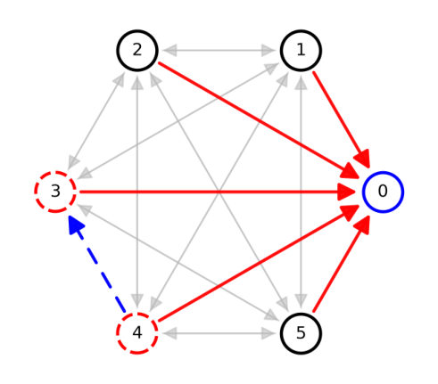
<figcaption class="paper-figure-caption"><b>Fig 1.</b> FIG. 1. Solid lines show the edge-to-vertex aggregation up- date, which pools edges h01 to h05 (solid red arrows) into vertex h0 (solid blue circle). Dashed lines show the vertex-to- edge feedback, where vertices h3 and h4 (dashed red circles) modify edge h34 (dashed blue arrow).</figcaption>
</figure>
<figure class="paper-figure-card">
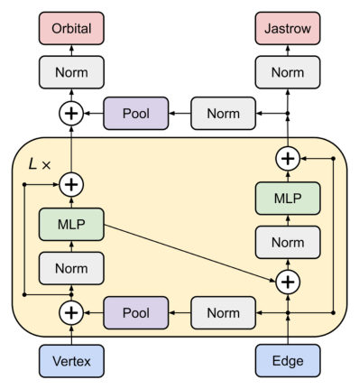
<figcaption class="paper-figure-caption"><b>Fig 2.</b> FIG. 2. High-level schematic of the EVE architecture. Pool denotes EdgeAttn and Norm denotes RMSNorm. Each block transforms input vertex and edge features through edge-to- vertex pooling, in-place vertex update, and vertex-perturbed in-place edge update.</figcaption>
</figure>
<figure class="paper-figure-card">
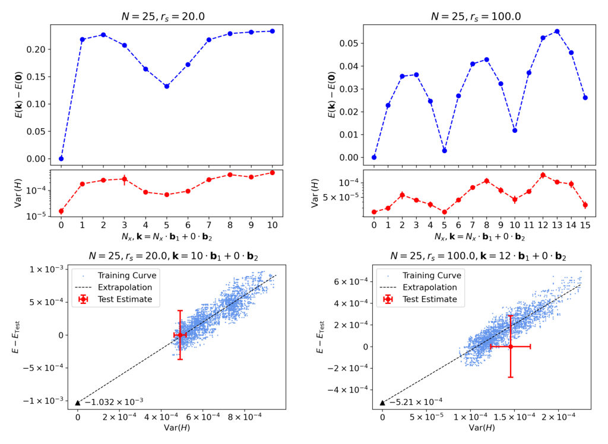
<figcaption class="paper-figure-caption"><b>Fig 3.</b> FIG. 3. Top Left: The superfluid’s momentum-sector energies. A pronounced roton minimum exists near Nx = 5. Top Right: The Wigner crystal’s momentum-sector energies. The minima at Nx = 0, 5, 10, 15 correspond to Anderson tower states, in this case floating crystals with different center-of-mass momenta, while the arcs are phonon excitations. Bottom Left: Error estimation for the superfluid’s highest-variance sector. Bottom Right: Error estimation for the Wigner crystal’s highest- variance sector. We infer dispersions after training using freshly burned-in walkers that the model has never seen before. For both extrapolations, the scattered points are training measurements smoothed by taking...</figcaption>
</figure>
<figure class="paper-figure-card">
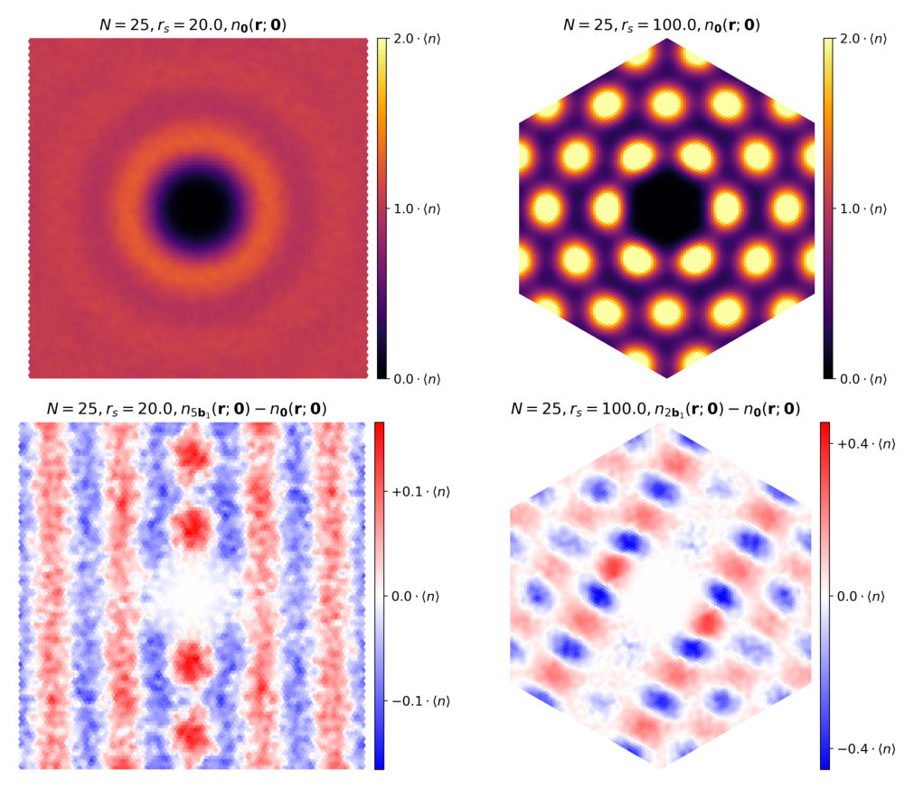
<figcaption class="paper-figure-caption"><b>Fig 4.</b> FIG. 4. All panels show a density-density correlation function, where the conditioning particle is placed at the origin. Top Left: The superfluid’s correlation function, which has a strong correlation hole at short distance surrounded by faint rings. Top Right: The Wigner crystal’s correlation function, where conditional density accumulates on a sharp triangular lattice excluding the origin’s correlation hole. Bottom Left: The roton’s correlation function minus the superfluid’s correlation function. The vertical accumulation and depletion bands represent a compressive excitation. Bottom Right: The phonon’s correlation function minus the crystal’s correlation function. Density depletes from...</figcaption>
</figure>
<figure class="paper-figure-card">
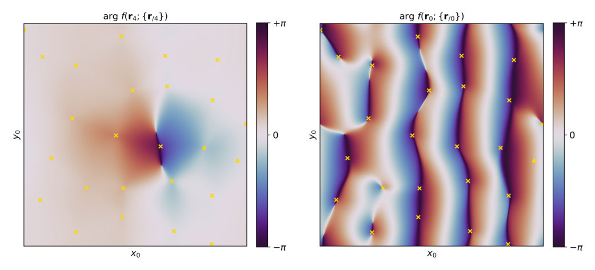
<figcaption class="paper-figure-caption"><b>Fig 5.</b> FIG. 5. Left: Learned phase of f(r4; {r/4}) as particle 0 is dragged around the simulation cell for the roton. The coalescence contains two counter-circulating vortices above and below. Right: Learned phase of f(r0; {r/0}) as the same particle 0 is dragged around the simulation cell. We can see phase strings formed by merging several vertically stacked vortex pairs. Some of these even wind around the torus and are non-contractible. In both panels, crosses mark clamped particles. In both panels, note that the plotted phase excludes the fixed eik·ri.</figcaption>
</figure>
</div>

<p><strong>Summary.</strong> The paper introduces EVE, a novel neural quantum state designed to be an exact eigenstate of total momentum for continuum particles. By applying this method to 2D bosons, the authors successfully use a single ansatz to distinguish between superfluid, roton, and crystalline phases based on the calculated energy-momentum dispersion relation. This demonstrates the power of advanced NQS architectures in diagnosing complex quantum matter states.</p>
<p><strong>Why it may be interesting.</strong> This work represents a significant advancement in applying machine learning (NQS) to solve complex quantum many-body problems by enforcing exact momentum eigenstates, providing powerful diagnostic tools for condensed matter physics beyond standard simulation methods.</p>
<details>
<summary>Detailed structure</summary>
<p><strong>Main problem.</strong> The primary goal is to computationally model the energy-momentum relationship of quasiparticles by solving for momentum-sector ground states in quantum many-body systems.</p>
<p><strong>Main result.</strong> The proposed EVE neural quantum state successfully describes four distinct phases (superfluid, roton, crystal, phonon) using a single ansatz, accurately diagnosing the underlying phase via the dispersion relation $\omega(k)$.</p>
<p><strong>Method.</strong> The authors employ Variational Monte Carlo (VMC) utilizing a novel Neural Quantum State (NQS) architecture called EVE, which is specifically designed to be an exact eigenstate of total momentum.</p>
<p><strong>Model / system.</strong> The system studied is 2D bosons interacting via mutual $1/r$ repulsion. The Hamiltonian involves kinetic and repulsive potential terms, allowing investigation across superfluid and Wigner crystal regimes.</p>
<p><strong>Key observables.</strong> Dispersion relation $\omega(k)$, density-density correlation functions, and the learned phase structure of the wavefunction.</p>
<p><strong>Important parameters / regimes.</strong> $r_s$ (density parameter), tested at $r_s = 20.0$ (superfluid) and $r_s = 100.0$ (crystal).</p>
<p><strong>Assumptions / limitations.</strong> The method sidesteps basis-set truncation error by working directly in the continuum, though it remains a variational upper bound.</p>
<p><strong>Figures summary.</strong> Figures illustrate the EVE architecture, momentum-sector energies showing roton minima or zone folding, density correlations confirming phase types, and visualizations of complex multi-particle phase strings.</p>
<p><strong>Paper structure.</strong> The paper introduces the EVE ansatz for continuum particles, details its application to 2D bosons in different density regimes ($r_s$), presents diagnostics using $E(k)$ and correlation functions to distinguish phases, and concludes with analysis of excitation structures like roton phase texture.</p>
</details>
<details>
<summary>Abstract</summary>
<p>We design the first neural quantum state for continuum particles that, for any chosen allowed momentum $\mathbf{k}$, is by construction an exact eigenstate of total momentum with eigenvalue $\mathbf{k}$. Our architecture, EVE, enables off-the-shelf VMC to solve for momentum-sector ground states. We test EVE on 2D bosons with mutual $1/r$ interactions, finding that a single unified ansatz is capable of describing four qualitatively different states: superfluid, roton, crystal, and phonon. At different densities, we extract the underlying phase of matter from the dispersion's shape. At $r_s = 20.0$, we see the roton minimum at finite $k$ expected of a superfluid. At $r_s = 100.0$, we see striking zone folding indicative of crystalline order, with periodically spaced minima representing floating crystals connected by phonon arcs in between. Using density-density correlation functions, we confirm the phase diagnoses and probe the excitations' correlation structures. Finally, we analyze the roton's phase texture and find unexpected multi-particle phase strings, formed when several vortex dipoles merge, leaving two vortices connected by a phase slip.</p>
</details>
<p><sub><a href="#top">↑ back to top</a></sub></p>

<p><a id="paper-2606.12700"></a></p>
<h3 id="measurement-geometry-for-quantum-random-access-codes-beyond-nayak-bound-and-toward-optimality"><a href="http://arxiv.org/abs/2606.12700v1">Measurement Geometry for Quantum Random Access Codes: Beyond Nayak Bound and Toward Optimality</a></h3>
<p><strong>Authors:</strong> Seiseki Akibue, Rudy Raymond, Suguru Tamaki, Kosei Teramoto<br>
<strong>Type:</strong> theory · <strong>Category:</strong> quantum information and computing · <strong>PDF:</strong> <a href="https://arxiv.org/pdf/2606.12700v1">https://arxiv.org/pdf/2606.12700v1</a><br>
<strong>Analysis basis:</strong> full PDF text, analyzed in chunks
<strong>Topic relevance:</strong> <code>quantum measurements</code> <strong>3/5</strong> · <code>entanglement &amp; information structure</code> <strong>1/5</strong> · <code>measurement-induced transitions</code> <strong>1/5</strong></p>
<div class="figure-strip-hint">↔ Scroll figures horizontally</div>
<div class="paper-figures-scroll">
<figure class="paper-figure-card">
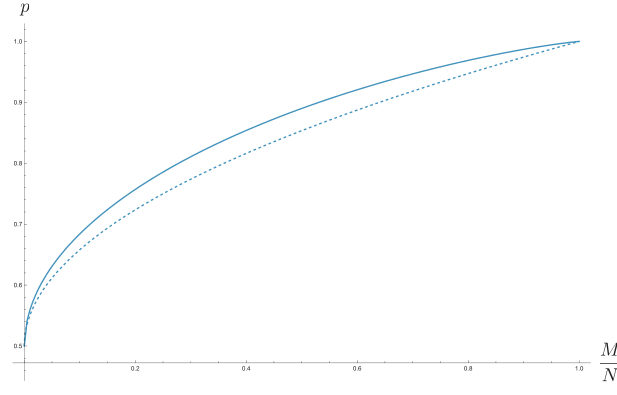
<figcaption class="paper-figure-caption"><b>Fig 1.</b> Figure 1: Comparison of upper bounds on the decoding probability p. The solid curve represents the Nayak bound p ≤H−1 2  1 −M</figcaption>
</figure>
<figure class="paper-figure-card">
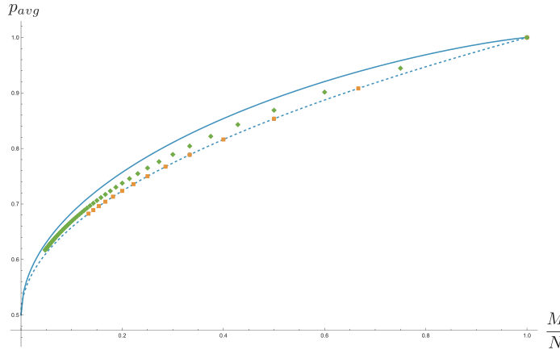
<figcaption class="paper-figure-caption"><b>Fig 2.</b> Figure 2: Comparison of upper bounds on the average-case decoding probability pavg. The solid curve represents the Nayak bound. The dashed curve represents the conjectured bound. The orange points represent the finite-size bounds obtained from Theorem 2 for M = 2, while the green points represent the corresponding new bounds for M = 3. For the finite-size bounds, we take N ∈{M, M + 1, . . . , 4M −1}.</figcaption>
</figure>
<figure class="paper-figure-card">
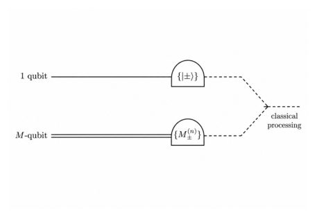
<figcaption class="paper-figure-caption"><b>Fig 3.</b> Figure 3: Quantum circuit for the decoding measurement in Proposition 4. The first qubit is measured in the computational basis with outcome {±}, and the remaining M qubits are measured by the MUPVM with outcome {±}. The classical post-processing outputs + if the two measurement outcomes coincide, and outputs −otherwise.</figcaption>
</figure>
</div>

<p><strong>Summary.</strong> This theoretical paper develops advanced techniques, rooted in random matrix theory, to establish tighter upper bounds on the performance of Quantum Random Access Codes (QRACs). By reformulating the problem spectrally and introducing MUPVMs, the authors significantly improve upon existing bounds and provide concrete constructions that approach these conjectured optimal limits.</p>
<p><strong>Why it may be interesting.</strong> The rigorous mathematical framework connecting optimal quantum information protocols (like QRACs) to deep concepts in random matrix theory and spectral graph theory provides powerful tools applicable to characterizing resource limits in other quantum communication tasks.</p>
<details>
<summary>Detailed structure</summary>
<p><strong>Main problem.</strong> The research aims to determine the optimal decoding probability for Quantum Random Access Codes (QRACs), establishing upper bounds that improve upon the standard Nayak bound.</p>
<p><strong>Main result.</strong> The authors derived sharper, finite-size upper bounds on the average-case decoding probability and provided explicit constructions achieving lower bounds using Mutually Unbiased Projector-Valued Measurements (MUPVMs).</p>
<p><strong>Method.</strong> The work reformulates QRAC design as a spectral problem for noncommuting measurements, employing matrix Chernoff-type arguments and analyzing the maximum eigenvalue of signed sum operators.</p>
<p><strong>Model / system.</strong> The system is the Quantum Random Access Code (QRAC), which encodes $N$ classical bits into $M$ qubits. The analysis focuses on decoding observables $\sigma(n)$ and their spectral properties.</p>
<p><strong>Key observables.</strong> Decoding probability ($p$), average-case probability ($    ext{p}<em ext_wc="ext{wc">{    ext{avg}}$), worst-case probability ($    ext{p}</em>(Y)$).}}$), and the maximum eigenvalue of the signed sum operator ($\lambda_{\max</p>
<p><strong>Important parameters / regimes.</strong> $N$ (number of bits), $M$ (number of qubits), and the specific parameters defining the code family, such as $(M+2, M)$-QRAC.</p>
<p><strong>Assumptions / limitations.</strong> The analysis relies on reformulating the problem using spectral theory for noncommuting measurements, generalizing from standard mutually unbiased bases to MUPVMs.</p>
<p><strong>Figures summary.</strong> Figures compare various theoretical bounds (Nayak vs. conjectured finite-size bound), and Tables summarize derived closed-form upper/lower bounds for success probabilities across different $(N, M)$ pairs.</p>
<p><strong>Paper structure.</strong> The paper progresses from establishing the general problem definition to deriving improved spectral bounds using random matrix theory, then analyzing structural requirements (MUPVMs) necessary for achieving these bounds, and finally presenting explicit constructions that meet or approach optimality.</p>
</details>
<details>
<summary>Abstract</summary>
<p>Quantum random access codes (QRACs) ask how well N classical bits can be encoded into M qubits while allowing any single bit to be recovered. Although the Nayak bound remains the standard general upper bound on the decoding probability, numerical evidence suggests a stronger upper bound in the small-qubit regime.   In this work, we formulate the optimal decoding probability in terms of decoding measurements, reformulating QRAC design as a spectral problem for noncommuting measurements. Using this formulation, we give an elementary proof of the Nayak bound by simplifying the Chernoff-bound argument. Moreover, we refine the argument to obtain upper bounds that improve over Nayak's bound in the entire finite-size regime.   The equality conditions of our bounds justify defining mutually unbiased projector-valued measurements (MUPVMs), a generalization of mutually unbiased bases. We show that decoding measurement of any two-qubit QRAC attaining the conjectured bound must form MUPVMs. We also show that any MUPVM, assisted by one ancillary qubit, yields a QRAC with optimal N-scaling decoding probability. Finally, we propose a new MUPVM-based construction for the (M+2,M)-QRAC family attaining the conjectured bound.</p>
</details>
<p><sub><a href="#top">↑ back to top</a></sub></p>

<p><a id="paper-2606.13638"></a></p>
<h3 id="optimal-classical-shadow-estimation-of-unitary-channels-at-heisenberg-limit"><a href="http://arxiv.org/abs/2606.13638v1">Optimal classical shadow estimation of unitary channels at Heisenberg limit</a></h3>
<p><strong>Authors:</strong> Entong He, Zihao Li, Noam Scully, Sisi Zhou, Yuxiang Yang<br>
<strong>Type:</strong> theory · <strong>Category:</strong> quantum information and computing · <strong>PDF:</strong> <a href="https://arxiv.org/pdf/2606.13638v1">https://arxiv.org/pdf/2606.13638v1</a><br>
<strong>Analysis basis:</strong> full PDF text, analyzed in chunks
<strong>Topic relevance:</strong> <code>quantum measurements</code> <strong>3/5</strong> · <code>entanglement &amp; information structure</code> <strong>1/5</strong> · <code>measurement-induced transitions</code> <strong>1/5</strong></p>
<div class="figure-strip-hint">↔ Scroll figures horizontally</div>
<div class="paper-figures-scroll">
<figure class="paper-figure-card">
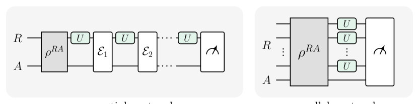
<figcaption class="paper-figure-caption"><b>Fig 1.</b> Figure 1: Sequential and parallel query protocols for learning an unknown unitary U. In a sequential protocol, different uses of U may be interleaved with intermediate quantum operations E1, E2, . . . assisted by ancillas. In a parallel protocol, all uses of U appear in a single non-adaptive layer. The initial state ρRA may be entangled between the query register R and an arbitrarily large ancillary register A. Any protocol is concluded with a joint measurement on all output systems and ancillas, followed by classical post-processing.</figcaption>
</figure>
<figure class="paper-figure-card">
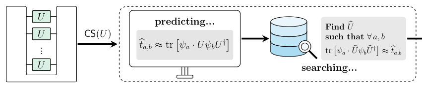
<figcaption class="paper-figure-caption"><b>Fig 2.</b> Figure 2: Conversion of a CSEU protocol into a unitary channel tomography protocol. The indexing database consists of pairs of pure states (ψa, ψb) chosen from a constant-precision covering net, which provide consis- tency tests for reconstructing the unknown unitary. The CSEU protocol estimates the transition probabilities tr[ψaUψbU †], and the reconstruction step outputs a unitary bU whose transition probabilities are consistent with these estimates. The symbol “≈” indicates closeness in absolute value within a prescribed threshold.</figcaption>
</figure>
<figure class="paper-figure-card">
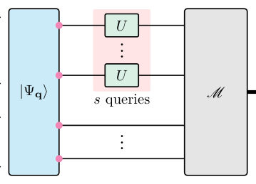
<figcaption class="paper-figure-caption"><b>Fig 3.</b> Figure 3: Covariant unitary learning protocol for generating a single unitary snapshot. Starting from the probe state |Ψq⟩, the protocol applies s parallel uses of the unknown unitary U and then measures the resulting memory state with the covariant POVM M . The measurement outcome bU is stored as part of the unitary-valued classical shadow data CS(U).</figcaption>
</figure>
<figure class="paper-figure-card">
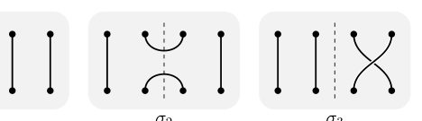
<figcaption class="paper-figure-caption"><b>Fig 4.</b> Figure 4: (a) The diagram of an element in Bd 3,2. (b) The diagrams of the generators of Ad 2,2.</figcaption>
</figure>
<figure class="paper-figure-card">
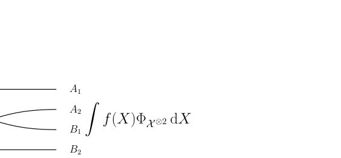
<figcaption class="paper-figure-caption"><b>Fig 5.</b> Figure 6: The local permutation that rearranges the bipartite space.</figcaption>
</figure>
</div>

<p><strong>Summary.</strong> The paper presents advanced quantum information theory protocols for learning unknown unitary channels and Hamiltonians. It achieves optimal query complexity by developing the Classical Shadow Estimation of Unitary Channels (CSEU) framework. This method proves that high-precision characterization can be done using parallel, non-adaptive measurements, closing theoretical gaps between sequential and parallel measurement limits.</p>
<p><strong>Why it may be interesting.</strong> This work provides fundamental theoretical tools for experimental quantum characterization. By achieving Heisenberg scaling with parallel queries, it suggests a pathway to realizing complex quantum process measurements efficiently on near-term hardware.</p>
<details>
<summary>Detailed structure</summary>
<p><strong>Main problem.</strong> The paper develops optimal protocols for estimating unknown quantum unitary channels (U) or Hamiltonians from limited measurements, aiming to achieve the Heisenberg limit scaling in terms of measurement resources.</p>
<p><strong>Main result.</strong> It establishes query-optimal, parallel, and non-adaptive protocols for Unitary Channel Tomography (UCT), showing that the required queries scale as $O(d\epsilon^{-1})$ or $O(d^2/\epsilon)$ depending on the specific task.</p>
<p><strong>Method.</strong> The core technique is Classical Shadow Estimation of Unitary Channels (CSEU), which separates data acquisition from prediction. This protocol is then adapted and reduced to solve full tomography problems, leveraging information-theoretic bounds like Holevo information.</p>
<p><strong>Model / system.</strong> The system involves an unknown $d$-dimensional unitary channel $U \in U(d)$ or a Hamiltonian $H$ governing the evolution. The learning task requires estimating expectation values $ ext{tr}[O \cdot U
ho U^\dagger]$ for arbitrary observables $O$ and states $
ho$.</p>
<p><strong>Key observables.</strong> Expectation values ($  ext{tr}[O \cdot U
ho U^\dagger]$), the diamond norm error ($|\hat{E} - E|_\diamond$), Holevo information ($\chi(t)$), and Pauli Transfer Matrix (PTM) entries.</p>
<p><strong>Important parameters / regimes.</strong> System dimension ($d$ or $n$), target precision ($\epsilon$), and query complexity scaling ($\propto \epsilon^{-1}$).</p>
<p><strong>Assumptions / limitations.</strong> The protocols assume the ability to perform parallel, non-adaptive queries. Some derivations rely on bounding the size of covering nets for unitaries.</p>
<p><strong>Figures summary.</strong> Figures illustrate the comparison between sequential vs. parallel query protocols (Figure 1) and show the reduction from CSEU to full unitary tomography using state coverings (Figure 2).</p>
<p><strong>Paper structure.</strong> The paper builds iteratively: first establishing the optimal, query-optimal CSEU protocol; then applying this tool to Unitary Channel Tomography (UCT); subsequently extending it to Hamiltonian learning and general quantum channel tomography in various regimes.</p>
</details>
<details>
<summary>Abstract</summary>
<p>Full tomography of an unknown quantum evolution is resource-intensive and often unnecessary when the goal is only to predict selected properties. This motivates the study of classical shadow estimation of unitary channels (CSEU), a task in which one queries an unknown $d$-dimensional unitary $U$ and stores classical data that can later be used to predict expectation values $\mathrm{tr}[O \cdot UρU^\dagger]$ up to additive error $\varepsilon$ for arbitrary input states $ρ$ and observables $O$. We propose a parallel, non-adaptive CSEU protocol using $\mathcal{O}(d\varepsilon^{-1})$ queries when the input states or observables have constant rank. This achieves Heisenberg scaling with respect to $\varepsilon$ and is query-optimal, as we prove a matching $Ω(d\varepsilon^{-1})$ lower bound that remains valid even with stronger access to the unknown unitary. Our query-optimal CSEU protocol provides a versatile and powerful tool for quantum learning theory, pushing the performance limits of several fundamental learning tasks, including unitary channel tomography, Hamiltonian learning, boundary-regime quantum channel tomography, Pauli transfer matrix learning, inverse-free amplitude estimation, pure-state property estimation, and shallow-circuit learning. Remarkably, we show that optimal unitary channel tomography can be achieved using only parallel queries, closing the gap between the best achievable efficiency of parallel and sequential tomography protocols. Together, these applications establish our framework as a fundamental tool for learning properties of quantum processes, particularly for certain key tasks that require high precision.</p>
</details>
<p><sub><a href="#top">↑ back to top</a></sub></p>

<p><a id="paper-2606.13150"></a></p>
<h3 id="robust-pretty-good-measurement-via-hybrid-classical-quantum-pseudoinverse-approximation-and-circuit-level-realization"><a href="http://arxiv.org/abs/2606.13150v1">Robust Pretty Good Measurement via Hybrid Classical-Quantum Pseudoinverse Approximation and Circuit-Level Realization</a></h3>
<p><strong>Authors:</strong> Bikash K. Behera, Andrés Camilo Granda Arango, Giuseppe Sergioli, Roberto Giuntini<br>
<strong>Type:</strong> both · <strong>Category:</strong> quantum information and computing · <strong>PDF:</strong> <a href="https://arxiv.org/pdf/2606.13150v1">https://arxiv.org/pdf/2606.13150v1</a><br>
<strong>Analysis basis:</strong> full PDF text, analyzed in chunks
<strong>Topic relevance:</strong> <code>quantum measurements</code> <strong>3/5</strong> · <code>QC/QI experiment</code> <strong>1/5</strong> · <code>measurement-induced transitions</code> <strong>1/5</strong></p>
<div class="figure-strip-hint">↔ Scroll figures horizontally</div>
<div class="paper-figures-scroll">
<figure class="paper-figure-card">
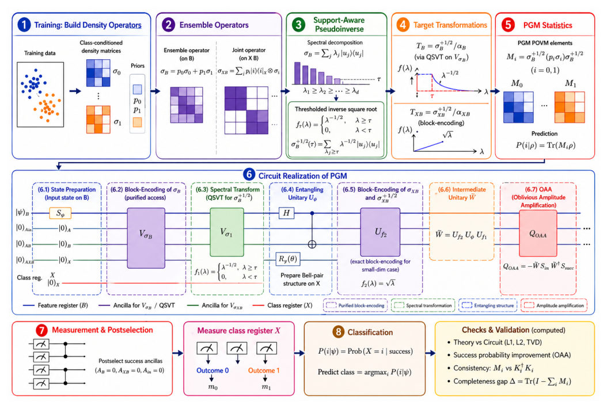
<figcaption class="paper-figure-caption"><b>Fig 1.</b> Fig. 1: Overall framework of the proposed support-aware and threshold-regularized hybrid classical-quantum PGM framework for classification. The pipeline consists of density-operator construction, support-aware pseudoinverse regularization, purified-access block- encoding, spectral transformation, construction of the intermediate unitary f W, oblivious amplitude amplification, and final measurement-based classification.</figcaption>
</figure>
<figure class="paper-figure-card">
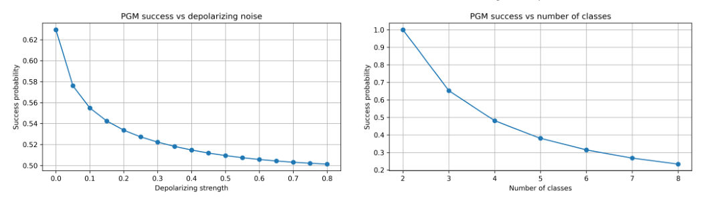
<figcaption class="paper-figure-caption"><b>Fig 2.</b> Fig. 2: Performance analysis of the proposed pseudoinverse-based PGM under different conditions. (a) Retained effective rank as a function of threshold τ, showing removal of unstable eigenvalues. (b) Corresponding success probability, demonstrating robustness across a wide threshold range. (c) Robustness under depolarizing noise, where performance degrades with increasing noise strength. (d) Scaling behavior with respect to the number of classes, indicating increased difficulty in state discrimination for larger ensembles.</figcaption>
</figure>
<figure class="paper-figure-card">
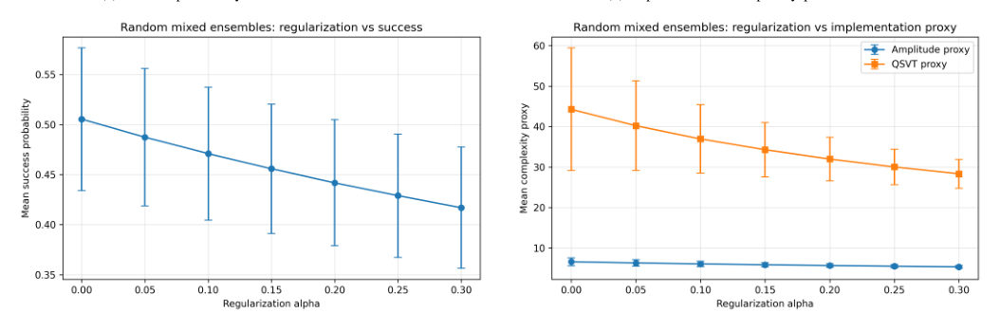
<figcaption class="paper-figure-caption"><b>Fig 3.</b> Fig. 3: Scaling and regularization behavior of the pseudoinverse-based PGM. (a) Success probability decreases with increasing number of classes K, reflecting reduced distinguishability among quantum states. (b) Implementation complexity proxies increase with K, indicating higher resource requirements. (c) Mean success probability decreases with regularization strength α, as stronger mixing reduces state separability. (d) Implementation complexity proxies decrease with α, showing improved spectral conditioning and reduced implementation cost. Error bars (where applicable) denote standard deviation over random mixed ensembles.</figcaption>
</figure>
<figure class="paper-figure-card">
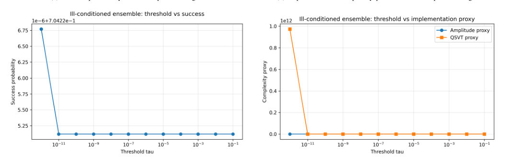
<figcaption class="paper-figure-caption"><b>Fig 4.</b> Fig. 4: Performance and conditioning behavior of the pseudoinverse-based PGM under geometric separation and spectral regularization. (a) Success probability increases with the angle between quantum states, reflecting improved distinguishability. (b) Implementation complexity proxies decrease with increasing angle, indicating better conditioning of the ensemble operator. (c) Success probability remains stable across a wide range of threshold values τ, demonstrating robustness to spectral truncation. (d) Implementation complexity proxies decrease significantly with increasing τ, showing that removing small eigenvalue components improves conditioning and reduces computational cost.</figcaption>
</figure>
<figure class="paper-figure-card">
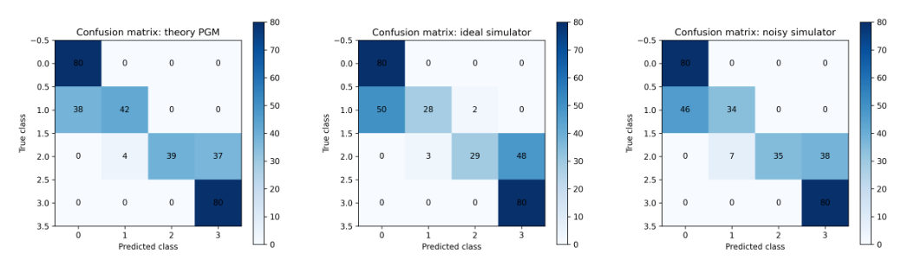
<figcaption class="paper-figure-caption"><b>Fig 5.</b> Fig. 5: Confusion matrices for the four-class trained PGM classifier. (a) Theoretical PGM predictions obtained directly from the trained POVM elements. (b) End-to-end implementation on the ideal quantum simulator using the Naimark-dilation-based circuit realization. (c) End-to-end implementation on the noisy quantum simulator. All three panels show strong agreement on classes 0 and 3, while the dominant classification difficulty occurs between the middle classes 1 and 2, where the underlying states are more strongly overlapping.</figcaption>
</figure>
</div>

<p><strong>Summary.</strong> This paper introduces a robust method to perform quantum state discrimination using the Pretty Good Measurement (PGM) protocol. It overcomes the instability of standard PGM by employing the Moore-Penrose pseudoinverse and threshold regularization, creating a practical hybrid classical-quantum framework for circuit implementation. The results demonstrate stable performance even when the underlying ensemble operator is ill-conditioned or rank-deficient.</p>
<p><strong>Why it may be interesting.</strong> This work provides a concrete, implementable protocol for quantum state discrimination that directly addresses major practical limitations (ill-conditioning) encountered when translating theoretical optimal measurements into NISQ hardware circuits.</p>
<details>
<summary>Detailed structure</summary>
<p><strong>Main problem.</strong> The primary challenge is achieving a numerically stable, circuit-level implementation of Pretty Good Measurement (PGM) for quantum state discrimination when the ensemble operator is singular or ill-conditioned.</p>
<p><strong>Main result.</strong> The authors propose and validate a hybrid classical-quantum framework using the Moore-Penrose pseudoinverse and threshold regularization to ensure robust measurement operators even in rank-deficient regimes.</p>
<p><strong>Method.</strong> They combine spectral preprocessing (classically calculating the regularized pseudoinverse) with quantum circuit realizations involving block-encoding, spectral transformations, and Oblivious Amplitude Amplification.</p>
<p><strong>Model / system.</strong> The work analyzes quantum state discrimination for an ensemble $\{p_i, 
ho_i\}$ of mixed states. The core mathematical object is the ensemble operator $S = \sum p_i 
ho_i$, which dictates the measurement operators $M_i$.</p>
<p><strong>Key observables.</strong> Measurement operators ($M_i$), Success Probability ($P_{	ext{succ}}$), Trace Gap ($\Delta$), and Total Variation Distance (TVD) between theoretical and simulated probabilities.</p>
<p><strong>Important parameters / regimes.</strong> The regularization threshold ($ au$) is crucial, balancing stability against accuracy; the number of classes ($K$) also dictates complexity and performance scaling.</p>
<p><strong>Assumptions / limitations.</strong> The framework assumes that spectral information required for the pseudoinverse can be extracted classically (hybrid approach), although future work aims for full quantum realization.</p>
<p><strong>Figures summary.</strong> Figures illustrate the overall pipeline, showing how thresholding stabilizes the measurement operators, and compare theoretical predictions against ideal and noisy simulator outputs across various parameter sweeps.</p>
<p><strong>Paper structure.</strong> The paper systematically develops the theory by replacing standard inverses with pseudoinverses, details the hybrid classical-quantum circuit realization using block-encoding, validates the method through extensive numerical simulations on synthetic and real datasets, and analyzes performance trade-offs based on regularization parameters ($ au$ or $\alpha$).</p>
</details>
<details>
<summary>Abstract</summary>
<p>Pretty Good Measurement (PGM) is a near-optimal strategy for quantum state discrimination, but its practical realization becomes unstable when the ensemble operator is singular or ill-conditioned. We introduce a numerically robust PGM formulation based on the Moore-Penrose pseudoinverse, replacing the standard inverse square root with a threshold-regularized variant that remains well-defined across different spectral regimes. We develop a hybrid classical-quantum framework that combines pseudoinverse-based spectral preprocessing with quantum circuit realizations using block-encoding and spectral-transformation techniques. The framework incorporates support awareness, yielding physically meaningful measurement operators even in rank-deficient cases, and employs oblivious amplitude amplification to improve circuit-level success probabilities. Extensive numerical and circuit-level simulations show close agreement between theoretical predictions and quantum circuit outputs. Experiments on synthetic and real datasets, including ill-conditioned and degenerate scenarios, demonstrate stable discrimination performance where standard PGM becomes numerically unstable. The results establish a practical hybrid classical-quantum framework for robust quantum state discrimination and extend previous circuit-based implementations of the PGM testing stage toward pseudoinverse-aware measurement design.</p>
</details>
<p><sub><a href="#top">↑ back to top</a></sub></p>

<p><a id="paper-2606.12795"></a></p>
<h3 id="when-proofreading-improves-both-speed-and-accuracy"><a href="http://arxiv.org/abs/2606.12795v1">When proofreading improves both speed and accuracy</a></h3>
<p><strong>Authors:</strong> Arup Biswas, L. Mahadevan<br>
<strong>Type:</strong> theory · <strong>Category:</strong> statistical mechanics · <strong>PDF:</strong> <a href="https://arxiv.org/pdf/2606.12795v1">https://arxiv.org/pdf/2606.12795v1</a><br>
<strong>Analysis basis:</strong> full PDF text, analyzed in chunks
<strong>Topic relevance:</strong> <code>Keldysh / 2PI / non-Gaussian methods</code> <strong>2/5</strong> · <code>non-equilibrium dynamics</code> <strong>2/5</strong> · <code>analog quantum simulation</code> <strong>1/5</strong> · <code>correlated / nonlocal dissipation</code> <strong>1/5</strong> · <code>driven-dissipative phase transition</code> <strong>1/5</strong> · <code>methods for driven-dissipative</code> <strong>1/5</strong> · <code>non-equilibrium universality</code> <strong>1/5</strong></p>
<div class="figure-strip-hint">↔ Scroll figures horizontally</div>
<div class="paper-figures-scroll">
<figure class="paper-figure-card">
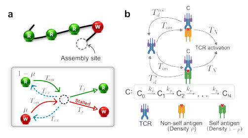
<figcaption class="paper-figure-caption"><b>Fig 1.</b> FIG. 1. a DNA replication as an example of a self-assembly process. A mismatched subunit ‘W’ in the self-assembly of polymers, such as a mutation in DNA replication, leads to the stalling of the process so that subsequent addition of the subunit is hindered. Proofreading in here prevents stalling by excising the nucleotide after random time intervals Tex, thereby facilitating the speed of the assembly process as well as reducing the error. b Kinetic proofreading for TCR acti- vation network. An accurate response is generated when the TCR is activated by the non-self antigen. In here, intermit- tent dissociation of the TCR-pMHC complex C ensures that the self antigens are rejected more often.</figcaption>
</figure>
<figure class="paper-figure-card">
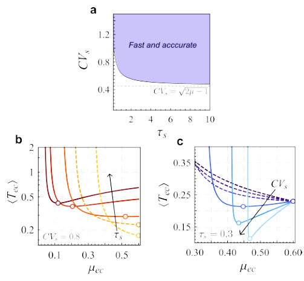
<figcaption class="paper-figure-caption"><b>Fig 2.</b> FIG. 2. Illustration for gamma distributed stall times, when proofreading improves speed and accuracy si- multaneously. a Parameter space (shaded region) where the conditions Eq. (7) and Eq. (10) holds (for µ = 0.6). In the limit of ⟨Ts⟩≫⟨Tf⟩the separatrix is given by CVs = √2µ −1. b We fix CVs = 0.8 and vary τs ∈[0.2, 1]. We see that as τs increases beyond τs = 0.38 as given by the sepa- ratrix in a, we get a region where both the error (µec) and MFPT (⟨Tec⟩) decrease (region right to the circles in each curve). The curves where the criteria (Eq. (10)) are not satis- fied is marked by the dashed lines. We choose a dashed curve from b with fixed τs = 0.3 and vary CVs ∈[0.6, 1.4] in c. We...</figcaption>
</figure>
<figure class="paper-figure-card">
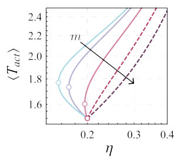
<figcaption class="paper-figure-caption"><b>Fig 3.</b> FIG. 3. ‘Fast and accurate’ T-cell activation - The re- gion below the circles in the solid curve is where ‘more ac- curate is faster’ for T-cell activation governed by Eq. (15) and Eq. (16). The curves undergo a behavioural transition from a non-monotonic to a monotonic variation with increas- ing m = ⟨T s d ⟩ ⟨T ns d ⟩.</figcaption>
</figure>
<figure class="paper-figure-card">
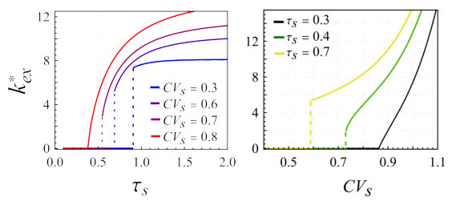
<figcaption class="paper-figure-caption"><b>Fig 4.</b> FIG. 4. Nature of the transition: The optimal value of rate of excision as obtained from Eq. (17) exhibits both first and second order phase transitions with respect to τs and CVs. For first-order transition, however, the criterion in Eq. (10) does not necessarily hold.</figcaption>
</figure>
</div>

<p><strong>Summary.</strong> This theoretical work develops a general criterion showing that proofreading can enhance both the speed and accuracy of complex stochastic processes. It achieves this by demonstrating that the variability (fluctuations) of stalling times, rather than just their average duration, dictates whether such simultaneous improvement is possible.</p>
<p><strong>Why it may be interesting.</strong> The mathematical framework for analyzing non-Markovian processes, especially those involving memory effects or resetting mechanisms, is highly relevant to open quantum systems modeling, particularly in contexts like quantum error correction or decoherence management.</p>
<details>
<summary>Detailed structure</summary>
<p><strong>Main problem.</strong> The paper investigates whether proofreading mechanisms can simultaneously improve both the speed (Mean First Passage Time) and accuracy (error rate) of a stochastic process, challenging the typical trade-off assumption.</p>
<p><strong>Main result.</strong> Simultaneous improvement is possible when fluctuations in the stall durations, quantified by the coefficient of variation (CV), exceed specific thresholds relative to the intrinsic error rate. The criteria derived are sufficient but not necessary for optimal performance.</p>
<p><strong>Method.</strong> The analysis uses non-Markovian renewal theory and first-passage time calculations, deriving exact expressions for error rates and mean passage times using limiting procedures on probability distributions (e.g., exponential or Gamma).</p>
<p><strong>Model / system.</strong> The framework is applied to general stochastic processes involving stalling and excision/proofreading, with physical examples including DNA replication, polymer self-assembly, and T-cell immune recognition.</p>
<p><strong>Key observables.</strong> Error rate ($\mu_{ec}$) and Mean First Passage Time ($\langle T_{ec} 
angle$).</p>
<p><strong>Important parameters / regimes.</strong> Coefficient of variation (CV) of stall time; intrinsic error rate ($\mu$); ratio of mean stall time to forward waiting time ($\langle T_s 
angle / \langle T_f 
angle$).</p>
<p><strong>Assumptions / limitations.</strong> Initial analyses rely on the exponential distribution for excision times, but the general framework extends results using Gamma distributions and analyzing limits ($k_{ex} 	o 0$).</p>
<p><strong>Figures summary.</strong> Figures illustrate physical examples like DNA replication and T-cell activation. Figure 2 shows the 'fast and accurate' regime dependence on CV; Figure 3 details the transition region for T-cell activity.</p>
<p><strong>Paper structure.</strong> The paper develops general renewal equations, derives conditions based on mean times ($\langle T_s 
angle > \langle T_f 
angle$), then refines these using CV analysis (Eq. 10), and finally discusses limitations by examining first-order phase transitions where the initial limiting assumptions break down.</p>
</details>
<details>
<summary>Abstract</summary>
<p>Proofreading is generally thought to improve accuracy at the expense of speed. We show that this trade-off can be reversed in stochastic processes with long-lived stalled states. Using a non-Markovian renewal framework, we derive exact expressions for the error rate and completion time under proofreading for arbitrary stall-time distributions. Our analysis reveals that fluctuations in stall durations, rather than their mean alone, determine whether proofreading can simultaneously increase speed and accuracy. In the limit of strong stalling, this regime emerges when the coefficient of variation of the stall time exceeds a threshold set by the intrinsic error rate. These results provide a general criterion for proofreading in systems ranging from self-assembly and polymer replication to immune recognition and other nonequilibrium information-processing systems.</p>
</details>
<p><sub><a href="#top">↑ back to top</a></sub></p>

<p><a id="paper-2606.13559"></a></p>
<h3 id="approximate-quantum-error-correction-theory-of-non-isometric-codes"><a href="http://arxiv.org/abs/2606.13559v1">Approximate quantum error correction theory of non-isometric codes</a></h3>
<p><strong>Authors:</strong> Yixu Wang, Yijia Xu, Zi-Wen Liu<br>
<strong>Type:</strong> theory · <strong>Category:</strong> quantum information and computing · <strong>PDF:</strong> <a href="https://arxiv.org/pdf/2606.13559v1">https://arxiv.org/pdf/2606.13559v1</a><br>
<strong>Analysis basis:</strong> full PDF text, analyzed in chunks
<strong>Topic relevance:</strong> <code>entanglement &amp; information structure</code> <strong>2/5</strong> · <code>Keldysh / 2PI / non-Gaussian methods</code> <strong>1/5</strong> · <code>correlated / nonlocal dissipation</code> <strong>1/5</strong> · <code>driven-dissipative phase transition</code> <strong>1/5</strong> · <code>methods for driven-dissipative</code> <strong>1/5</strong></p>
<div class="figure-strip-hint">↔ Scroll figures horizontally</div>
<div class="paper-figures-scroll">
<figure class="paper-figure-card">
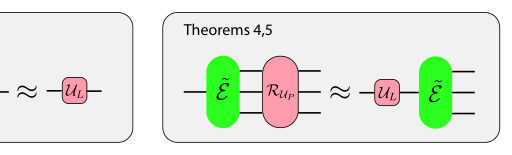
<figcaption class="paper-figure-caption"><b>Fig 1.</b> FIG. 1. Schematic overview of the approximation relations for non-isometric codes discussed in Theorems 2, 3, 4, 5.</figcaption>
</figure>
<figure class="paper-figure-card">

<figcaption class="paper-figure-caption"><b>Fig 2.</b> FIG. 2. Recovery and logical gate accuracies of regularized GKP codes. Upper panel: Fmin, Favg and FChoi with respect to the regu- larization parameter β. Lower panel: maxRUP FChoi(RUP ◦˜E, ˜E ◦ UL) for logical gates X, H, T and UL,min with respect to β.</figcaption>
</figure>
</div>

<p><strong>Summary.</strong> This paper establishes a comprehensive, systematic theory for quantum error correction codes operating under non-isometric encoding conditions. It quantifies the fundamental limits on achievable fidelity and logical operation accuracy using information-theoretic measures derived from the code's Gram operator. This advances QEC theory by bridging abstract mathematics with physical constraints found in continuous-variable systems and quantum gravity.</p>
<p><strong>Why it may be interesting.</strong> This work is highly relevant as it provides a rigorous mathematical toolset for analyzing practical limitations in quantum computation that arise from imperfect hardware or fundamental physics models like holography.</p>
<details>
<summary>Detailed structure</summary>
<p><strong>Main problem.</strong> To develop a general theory for quantum error correction (QEC) that accounts for non-isometric encoding, which arises in realistic physical implementations.</p>
<p><strong>Main result.</strong> The paper derives explicit formulas and bounds for intrinsic optimal recovery fidelities ($F_{\min}, F^2_{	ext{avg}}, F_{	ext{Choi}}$) based on the condition ratio of the Gram operator $V^\dagger V$. It also establishes necessary conditions for noise resilience in non-isometric settings.</p>
<p><strong>Method.</strong> The analysis employs information-theoretic measures (fidelity, purified distance) and utilizes mathematical tools like eigenvalue analysis, random matrix theory (Marchenko–Pastur distribution), and optimization techniques based on quasiconvexity.</p>
<p><strong>Model / system.</strong> The theoretical framework models quantum encoding via a map $V: \mathcal{H}_L 
ightarrow \mathcal{H}_P$. Specific examples include GKP codes and Tiger codes, which are analyzed in the context of continuous-variable systems and holographic gravity (AdS/CFT).</p>
<p><strong>Key observables.</strong> Channel fidelity ($F_
ho$), purified distance ($\epsilon_
ho$), Condition Ratio ($r$), and various optimal recovery fidelities ($F_{\min}, F^2_{	ext{avg}}, F_{	ext{Choi}}$).</p>
<p><strong>Important parameters / regimes.</strong> The condition ratio $r = \lambda_{\min} / \lambda_{\max}$ of the Gram operator $V^\dagger V$; dimension ratios like $d_L/d_P$ in random matrix limits.</p>
<p><strong>Assumptions / limitations.</strong> The primary assumption is moving beyond the standard isometric encoding assumption. In some analyses, it assumes $orall i, \lambda_i &gt; 0$ to avoid trivial kernels.</p>
<p><strong>Figures summary.</strong> Not specified (No figure descriptions were extracted).</p>
<p><strong>Paper structure.</strong> The paper systematically builds theory by first defining non-isometric encodings and deriving intrinsic fidelity limits using the condition ratio. It then applies this framework to specific codes (GKP, Tiger) and physical contexts (holography), culminating in establishing general inequalities between different fidelity measures.</p>
</details>
<details>
<summary>Abstract</summary>
<p>Non-isometric encoding arises in various important contexts in quantum error correction, most notably in the finite-energy, non-ideal codewords inevitable in experimental realizations of continuous-variable codes, and holographic quantum gravity. In this work, we present a general and systematic theory of non-isometric quantum error-correcting codes. In particular, we employ the approximate quantum error correction framework to quantitatively study the fundamental limitations imposed by non-isometric encodings on the accuracy of quantum error correction and implementation of logical operations. We apply our theory to analyze GKP and tiger codes under energy constraints, and discuss the implications to holography.</p>
</details>
<p><sub><a href="#top">↑ back to top</a></sub></p>

<p><a id="paper-2606.13428"></a></p>
<h3 id="numerical-hints-for-dyon-condensation-at-math739math-via-wilson-t-hooft-loops-in-math740math-yang-mills-theory"><a href="http://arxiv.org/abs/2606.13428v1">Numerical Hints for Dyon Condensation at $θ=2π$ via Wilson-'t Hooft Loops in $SU(2)$ Yang-Mills Theory</a></h3>
<p><strong>Authors:</strong> Hiromasa Watanabe, Issaku Kanamori, Okuto Morikawa, Yuki Nagai, Yuya Tanizaki, Akio Tomiya<br>
<strong>Type:</strong> theory · <strong>Category:</strong> statistical mechanics · <strong>PDF:</strong> <a href="https://arxiv.org/pdf/2606.13428v1">https://arxiv.org/pdf/2606.13428v1</a><br>
<strong>Analysis basis:</strong> full PDF text, analyzed in chunks
<strong>Topic relevance:</strong> <code>analog quantum simulation</code> <strong>2/5</strong> · <code>Keldysh / 2PI / non-Gaussian methods</code> <strong>1/5</strong> · <code>entanglement &amp; information structure</code> <strong>1/5</strong> · <code>methods for driven-dissipative</code> <strong>1/5</strong> · <code>non-equilibrium dynamics</code> <strong>1/5</strong></p>
<div class="figure-strip-hint">↔ Scroll figures horizontally</div>
<div class="paper-figures-scroll">
<figure class="paper-figure-card">

<figcaption class="paper-figure-caption"><b>Fig 1.</b> Figure 2. Flow-time dependence of the rescaling factor Z.</figcaption>
</figure>
<figure class="paper-figure-card">

<figcaption class="paper-figure-caption"><b>Fig 2.</b> Figure 3. Absolute values of the reweighting factors, |Zθ=2π/Zθ=0|, for the 123 × 8 lattice (left) and the 163 × 10 lattice (right).</figcaption>
</figure>
<figure class="paper-figure-card">

<figcaption class="paper-figure-caption"><b>Fig 3.</b> Figure 4. Histograms of ZQ(tflow) top of the 123 × 8 lattice at flow times tflow = 0, 0.4, and 0.8. Rapid convergence toward the integer-quantized topological sectors is observed due to the DBW2 flow.</figcaption>
</figure>
<figure class="paper-figure-card">

<figcaption class="paper-figure-caption"><b>Fig 4.</b> Figure 5. Histograms of ZQ(tflow) top of the 163 × 10 lattice at flow times tflow = 0, 0.5, and 1.0.</figcaption>
</figure>
<figure class="paper-figure-card">

<figcaption class="paper-figure-caption"><b>Fig 5.</b> Figure 6. Histograms of ZQ(tflow) top of the 123 × 8 lattice at flow times tflow = 0, 0.4, and 0.8. The spatial size of the inserted ’t Hooft loop is R = Ns/2 = 6. In the presence of ’t Hooft loops, topological charges no longer quantize to integers.</figcaption>
</figure>
</div>

<p><strong>Summary.</strong> This work uses lattice gauge theory simulations to investigate the nature of vacuum condensation at $  heta=2\pi$ in $SU(2)$ Yang-Mills theory. By measuring specialized Wilson-'t Hooft and dyonic loop operators, the authors provide numerical evidence supporting dyon condensation over monopole condensation. This confirms that the $   heta=2\pi$ vacuum resides in a distinct Symmetry-Protected Topological state.</p>
<p><strong>Why it may be interesting.</strong> While focused on lattice gauge theory, the methodology involves advanced non-perturbative simulation techniques (gradient flow) and analyzing long-range correlations in quantum field theories, which share conceptual links with many-body physics simulations.</p>
<details>
<summary>Detailed structure</summary>
<p><strong>Main problem.</strong> The study aims to numerically distinguish between dyon condensation and monopole condensation in $SU(2)$ Yang-Mills theory at the $   heta=2\pi$ vacuum by analyzing loop operators.</p>
<p><strong>Main result.</strong> The authors obtained numerical evidence consistent with dyon condensation, as indicated by the perimeter law behavior of the dyonic Wilson-'t Hooft loops, contradicting earlier theoretical predictions of monopole condensation.</p>
<p><strong>Method.</strong> The research employs lattice Monte Carlo simulations utilizing the 1-form covariant DBW2 gradient flow to smear gauge fields and evaluate correlation functions involving 't Hooft and dyonic loop operators at $   heta=2\pi$.</p>
<p><strong>Model / system.</strong> The system is pure $SU(2)$ Yang-Mills theory simulated on a lattice using the Wilson action, incorporating background gauge fields ($B_p$) related to the $Z_N$ 1-form center symmetry.</p>
<p><strong>Key observables.</strong> Wilson loops, 't Hooft loop operators ($\langle H 
angle$), and dyonic loop operators ($\langle HW 
angle$). The key diagnostic is whether these expectation values obey an area law or a perimeter law as a function of the loop separation $R$.</p>
<p><strong>Important parameters / regimes.</strong> The topological angle $ heta$, specifically comparing $ heta=0$ and $   heta=2\pi$; the lattice coupling constant ($eta$) and flow time ($t_{  ext{flow}}$).</p>
<p><strong>Assumptions / limitations.</strong> The analysis assumes that the long-distance behavior of these loop operators directly diagnoses the type of condensation (dyon vs. monopole) via established theoretical criteria.</p>
<p><strong>Figures summary.</strong> Figures show $R$-dependence analyses for both 't Hooft and dyonic loops, with Figure 10 specifically illustrating the perimeter law signature for the dyonic lines at $    heta=2\pi$.</p>
<p><strong>Paper structure.</strong> The paper develops theoretical frameworks relating vacuum structure to loop behavior, details the use of gradient flow techniques to handle topological charge quantization at $   heta=2\pi$, and concludes with numerical measurements comparing the area/perimeter law scaling for dyonic vs. 't Hooft loops.</p>
</details>
<details>
<summary>Abstract</summary>
<p>Yang-Mills theories at $θ$ and $θ+2π$ are unitarily equivalent, but their $2π$ periodicity has a nontrivial realization. Recent developments in generalized global symmetries show that confinement vacua at $θ=0$ and $2π$ should belong to different symmetry-protected topological (SPT) states with the $1$-form center symmetry. For its examination, we measure the Wilson-'t Hooft loop operators at $θ=2π$ for the $SU(2)$ Wilson lattice gauge action and discuss their long-distance behaviors. This requires us to identify the gauge topological charge in the presence of defects, and we employ the $1$-form covariant DBW2 gradient flow to smear lattice gauge fields. We then obtain numerical evidence consistent with dyon condensation at $θ=2π$, rather than monopole condensation, as theoretically predicted.</p>
</details>
<p><sub><a href="#top">↑ back to top</a></sub></p>

<p><a id="paper-2606.12665"></a></p>
<h3 id="hall-conductivity-reveals-the-nature-of-quantum-coherence-in-strongly-correlated-metals"><a href="http://arxiv.org/abs/2606.12665v1">Hall conductivity reveals the nature of quantum coherence in strongly correlated metals</a></h3>
<p><strong>Authors:</strong> Emily Z. Zhang, Thomas P. Devereaux<br>
<strong>Type:</strong> theory · <strong>Category:</strong> strongly correlated electrons · <strong>PDF:</strong> <a href="https://arxiv.org/pdf/2606.12665v1">https://arxiv.org/pdf/2606.12665v1</a><br>
<strong>Analysis basis:</strong> full PDF text, analyzed in chunks
<strong>Topic relevance:</strong> <code>Keldysh / 2PI / non-Gaussian methods</code> <strong>2/5</strong> · <code>analog quantum simulation</code> <strong>1/5</strong> · <code>methods for driven-dissipative</code> <strong>1/5</strong> · <code>non-equilibrium dynamics</code> <strong>1/5</strong></p>
<div class="figure-strip-hint">↔ Scroll figures horizontally</div>
<div class="paper-figures-scroll">
<figure class="paper-figure-card">

<figcaption class="paper-figure-caption"><b>Fig 1.</b> Figure 1: Log-log plot of |cot(𝜃𝐻)| as a function of temperature obtained from analytic</figcaption>
</figure>
<figure class="paper-figure-card">

<figcaption class="paper-figure-caption"><b>Fig 2.</b> Figure 2: Longitudinal resistivity 𝜌𝑥𝑥and Hall coefficient 𝑅𝐻as a function of doping, 𝑡′, and</figcaption>
</figure>
<figure class="paper-figure-card">

<figcaption class="paper-figure-caption"><b>Fig 3.</b> Figure 3: Doping and 𝑡′ dependence of the spectral function proxy and Hall coefficient. The</figcaption>
</figure>
<figure class="paper-figure-card">

<figcaption class="paper-figure-caption"><b>Fig 4.</b> Figure 4: Longitudinal and Hall conductivity divided by high temperature asymptotic scaling</figcaption>
</figure>
<figure class="paper-figure-card">

<figcaption class="paper-figure-caption"><b>Fig 5.</b> Figure 5: Conceptual sketches of longitudinal versus transverse transport and the semi-</figcaption>
</figure>
</div>

<p><strong>Summary.</strong> This work investigates quantum coherence in strongly correlated metals by comparing longitudinal and transverse electrical responses. Using advanced Quantum Monte Carlo simulations on the doped Hubbard model, the authors show that while resistance appears universally temperature-linear, the Hall conductivity reveals a distinct crossover scale marking the transition to true quantum coherence. This highlights $\sigma_{xy}$ as a superior diagnostic tool for probing underlying many-body physics.</p>
<p><strong>Why it may be interesting.</strong> The focus on $\sigma_{xy}$ as a probe for coherence mechanisms (related to Aharonov-Bohm phases) provides an alternative diagnostic tool compared to standard transport measurements like resistivity.</p>
<details>
<summary>Detailed structure</summary>
<p><strong>Main problem.</strong> To understand the nature of quantum coherence in strongly correlated metals by investigating transport properties beyond simple quasiparticle descriptions.</p>
<p><strong>Main result.</strong> While longitudinal resistivity remains robustly linear in temperature, the Hall conductivity reveals a crossover from semi-classical to quantum-coherent transport that is otherwise masked in the resistivity measurement.</p>
<p><strong>Method.</strong> The study employs numerically exact determinantal Quantum Monte Carlo (DQMC) simulations and high-temperature expansions of current-current correlators to calculate both longitudinal and transverse transport coefficients.</p>
<p><strong>Model / system.</strong> The research focuses on strongly correlated electron systems, specifically utilizing the doped Hubbard model with next-nearest-neighbor hopping ($t'$).</p>
<p><strong>Key observables.</strong> Longitudinal resistivity ($
ho_{xx}$), Hall conductivity ($\sigma_{xy}$), and the average double occupancy $\langle d 
angle$.</p>
<p><strong>Important parameters / regimes.</strong> Temperature ($T$), doping level, particle-hole asymmetry, Fermi surface topology, and hopping parameters ($t'$).</p>
<p><strong>Assumptions / limitations.</strong> The analysis relies on comparing results from DQMC simulations with high-temperature expansions of conductivities, and sometimes uses proxy methods for DC conductivity.</p>
<p><strong>Figures summary.</strong> Figures compare the temperature dependence of $\cot(	heta_H)$, showing distinct power laws; they contrast robustly linear $
ho_{xx}$ with qualitatively different $R_H$ behavior across varying parameters.</p>
<p><strong>Paper structure.</strong> The paper systematically compares longitudinal and transverse transport responses, arguing that the Hall response ($\sigma_{xy}$) is uniquely sensitive to correlation-induced spectral weight rearrangement and the onset of quantum coherence, unlike the resistivity ($
ho$).</p>
</details>
<details>
<summary>Abstract</summary>
<p>Linear-in-temperature resistivity is a hallmark for strange metallic transport, and appears universally in many strongly correlated electron systems. However, the focus on the longitudinal channel often overshadows the profound microscopic insights contained within the transverse response. Here, we utilize numerically exact determinantal quantum Monte Carlo simulations of the doped Hubbard model in a magnetic field to calculate longitudinal and transverse transport. We demonstrate that while the resistivity is robustly $T$-linear across parameter sets, the Hall response is highly sensitive to particle-hole asymmetry, Fermi surface topology, and many-body correlation effects. Specifically, the combination of these effects determine a crossover scale in which the system becomes quantum-coherent, and is reflected in the Hall conductivity. Our results demonstrate that while the $T$-linearity in resistivity appears universal, the Hall response reveals a crossover from semi-classical to quantum-coherent transport otherwise masked in the longitudinal channel.</p>
</details>
<p><sub><a href="#top">↑ back to top</a></sub></p>

<p><a id="paper-2606.13457"></a></p>
<h3 id="reduced-basis-algorithm-for-solving-nonlinear-differential-equations-on-quantum-computers"><a href="http://arxiv.org/abs/2606.13457v1">Reduced basis algorithm for solving nonlinear differential equations on quantum computers</a></h3>
<p><strong>Authors:</strong> Monica Lăcătuş, Matthias Möller, Sauro Succi<br>
<strong>Type:</strong> theory · <strong>Category:</strong> quantum information and computing · <strong>PDF:</strong> <a href="https://arxiv.org/pdf/2606.13457v1">https://arxiv.org/pdf/2606.13457v1</a><br>
<strong>Analysis basis:</strong> full PDF text, analyzed in chunks
<strong>Topic relevance:</strong> <code>analog quantum simulation</code> <strong>2/5</strong> · <code>driven-dissipative phase transition</code> <strong>1/5</strong> · <code>methods for driven-dissipative</code> <strong>1/5</strong> · <code>non-equilibrium dynamics</code> <strong>1/5</strong></p>
<div class="figure-strip-hint">↔ Scroll figures horizontally</div>
<div class="paper-figures-scroll">
<figure class="paper-figure-card">

<figcaption class="paper-figure-caption"><b>Fig 1.</b> FIG. 1. Numerical verification of the RBA representation for the Lorenz system, where the reference solution is obtained by the clas- sical explicit Euler method. The two phase-space trajectories agree up to floating-point round-off.</figcaption>
</figure>
<figure class="paper-figure-card">

<figcaption class="paper-figure-caption"><b>Fig 2.</b> FIG. 2. Block-encoding post-selection success probability for the Lorenz RBA operator as a function of the number of composed timesteps m. The unscaled representation uses the physical variables directly, while the scaled representation constructs the RBA map in normalized variables.</figcaption>
</figure>
<figure class="paper-figure-card">

<figcaption class="paper-figure-caption"><b>Fig 3.</b> FIG. 3. Numerical verification of the local RBA construction for the one-dimensional viscous Burgers equation. The solution is evolved to T = 0.4 from u(x,0) = sinx using N = 256, ν = 0.03, and h = 0.0025. The RBA solution is obtained by applying the m = 2 local lifted representation over successive two-timestep windows, with the lifted variables reconstructed from the current state at the beginning of each window. The reference solution is given by the standard finite-difference Euler implementation. The two profiles agree up to floating-point round-off.</figcaption>
</figure>
</div>

<p><strong>Summary.</strong> This paper introduces a Reduced Basis Algorithm (RBA) designed to simulate nonlinear differential equations on quantum computers. It achieves this by linearizing the exact time-stepping map over multiple steps using only a reduced set of necessary monomials. The method successfully reproduces known classical solutions for models like the Lorenz and Burgers equations, demonstrating polynomial scaling in system size while keeping the error confined to the initial time discretization.</p>
<p><strong>Why it may be interesting.</strong> It provides a concrete, polynomial-scaling quantum algorithm blueprint for simulating complex nonlinear dynamics that are central to many areas of AMO physics, such as plasma or fluid simulations, overcoming the limitations of direct Hamiltonian simulation.</p>
<details>
<summary>Detailed structure</summary>
<p><strong>Main problem.</strong> Developing efficient quantum algorithms to solve nonlinear differential equations (ODEs and PDEs), which is challenging because quantum evolution is intrinsically linear.</p>
<p><strong>Main result.</strong> The Reduced Basis Algorithm (RBA) successfully linearizes the exact discrete time-stepping map of nonlinear dynamics, allowing it to be represented by a linear operator acting on a reduced monomial basis.</p>
<p><strong>Method.</strong> The method involves composing the polynomial update map over $m$ timesteps and then constructing an equivalent linear RBA operator that acts only on a significantly smaller, reduced set of necessary monomials.</p>
<p><strong>Model / system.</strong> The approach is tested on canonical nonlinear systems like the Lorenz system (ODE) and the viscous Burgers equation (PDE). The core mechanism applies to any polynomial nonlinear ODE or PDE discretized via methods like the explicit Euler scheme.</p>
<p><strong>Key observables.</strong> State vector $z(t)$, post-selection success probability ($p_{	ext{succ}}$), and the required qubit count for encoding the reduced basis operator.</p>
<p><strong>Important parameters / regimes.</strong> The number of timesteps ($m$), the dimensionality ($n$ or $D$), the polynomial degree ($p$), and the grid size ($N$).</p>
<p><strong>Assumptions / limitations.</strong> The primary assumption is that the nonlinear dynamics can be accurately represented by a polynomial whose necessary monomials are sparse enough to allow for basis reduction. The error introduced is limited only to the underlying time discretization scheme.</p>
<p><strong>Figures summary.</strong> Figures show phase-space trajectories confirming that the RBA solution matches standard finite-difference Euler solutions, and plots illustrate the dramatic reduction in required monomial basis dimensions when using the reduced basis compared to the full basis.</p>
<p><strong>Paper structure.</strong> The paper introduces the RBA framework for both ODEs and PDEs, details the construction of local/global operators, validates the method on the Lorenz system (ODE), extends it to the Burgers equation (PDE), and discusses scaling improvements via variable rescaling.</p>
</details>
<details>
<summary>Abstract</summary>
<p>As quantum computing moves toward scientific computing applications, nonlinear differential equations remain a central challenge since quantum evolution is intrinsically linear. In this work, we introduce a reduced basis algorithm (RBA) for polynomial nonlinear ordinary differential equations (ODEs) and spatially discretized partial differential equations (PDEs). After time discretization, the method composes the resulting polynomial update map over $m$ timesteps, identifies the reduced monomial basis appearing in this composed map, and constructs a linear RBA operator whose action recovers the exact $m$-timestep nonlinear dynamics. Thus, at the level of the chosen discrete update rule, the method introduces no additional approximation error beyond the time discretization error. The qubit number requirement is governed by the size of the reduced monomial basis. For an $n$-dimensional polynomial ODE system of degree $p>1$, the lifted register requires at most $q_m^{\mathrm{ODE}} = O(nm\log p)$ qubits in the full basis scenario. For PDEs discretized on $N^D$ grid points, a locality-based construction requires at most $q_m^{\mathrm{PDE}} = O(D\log N + n m^{D+1}\log p)$ qubits. Hence, the dependence on the grid size remains logarithmic, while the nonlinear overhead is controlled by local reduced basis size. The main computational burden is moved from the quantum computer to a classical preprocessing step, where the reduced monomial basis and RBA operator are constructed for the chosen timestep window. Through numerical tests on the Lorenz system and the one-dimensional Burgers equation, we verify that the RBA reproduces the corresponding discrete time nonlinear dynamics exactly, while exposing the trade-off between timestep composition, reduced basis growth, and locality.</p>
</details>
<p><sub><a href="#top">↑ back to top</a></sub></p>

<p><a id="paper-2606.13052"></a></p>
<h3 id="simple-analytical-flux-tuned-iswap-pulses-for-leakage-suppression"><a href="http://arxiv.org/abs/2606.13052v1">Simple analytical flux-tuned iSWAP pulses for leakage suppression</a></h3>
<p><strong>Authors:</strong> Dimitrios Georgiadis, Boxi Li, Asier Galicia, Rami Barends, F. A. Cárdenas-López, Felix Motzoi<br>
<strong>Type:</strong> theory · <strong>Category:</strong> quantum information and computing · <strong>PDF:</strong> <a href="https://arxiv.org/pdf/2606.13052v1">https://arxiv.org/pdf/2606.13052v1</a><br>
<strong>Analysis basis:</strong> full PDF text, analyzed in chunks
<strong>Topic relevance:</strong> <code>QC/QI experiment</code> <strong>2/5</strong> · <code>methods for driven-dissipative</code> <strong>1/5</strong> · <code>non-equilibrium dynamics</code> <strong>1/5</strong></p>
<div class="figure-strip-hint">↔ Scroll figures horizontally</div>
<div class="paper-figures-scroll">
<figure class="paper-figure-card">

<figcaption class="paper-figure-caption"><b>Fig 1.</b> FIG. 1. Tunable-coupler architecture and operating principle. a) Circuit diagram of the tunable-coupling architecture consisting of three tunable transmon circuits. Each transmon is characterized by its capacitance Cℓand Josephson energies E(a) J,ℓand E(b) J,ℓalong a loop threaded by an external magnetic flux φx,ℓ. The devices are pair-wise coupled through capacitances Ck,j. Blue represents Qb1 and Qb2, whereas the red one acts as the coupler. Each device is described by the node variable φℓ. b) Schematic of the working principle: by modulating the coupler flux, the effective qubit-qubit coupling geff is tuned from an idling point (where geff ≈0) to a value activating an iSWAP gate. c)...</figcaption>
</figure>
<figure class="paper-figure-card">

<figcaption class="paper-figure-caption"><b>Fig 2.</b> FIG. 2. Population transfer fringe patterns. a) Population trans- fer |⟨100|U(t)|001⟩|2 as a function of time t and external coupler flux φext/φ0. Chevron-like fringes indicate the iSWAP resonance condi- tion, with faster swapping achievable at larger flux amplitudes. The green dashed line marks the idling point where geff ≈0. b) Corre- sponding leakage to the non-computational state, |⟨101|U(t)|200⟩|2, on a logarithmic scale. As the flux amplitude increases (shorter gate times), leakage to |200⟩grows rapidly and becomes the dominant source of coherent error.</figcaption>
</figure>
<figure class="paper-figure-card">

<figcaption class="paper-figure-caption"><b>Fig 3.</b> FIG. 3. Performance of Φ-DRAG for the symmetric system (α1 = α2). a) Leakage probability to |200⟩(starting from |101⟩) at the end of an iSWAP gate as a function of gate time τ f , comparing cosine-like pulses, Gaussian-like pulses Eq. (10), and their Φ-DRAG2-corrected counterparts Eq. (8). Each data point corresponds to an iSWAP pulse whose amplitude has been optimized to satisfy the area condition Eq. (3). For the Gaussian-like pulses the rising time has been selected to ensure leakage suppression below the desired threshold 10−4 (dashed line). b) Effective coupling |geff(t)|/2π as a function of normalized time t/τf for Gaussian-like pulses at four gate times τf ∈{15, 20, 25, 30} ns. c)...</figcaption>
</figure>
<figure class="paper-figure-card">

<figcaption class="paper-figure-caption"><b>Fig 4.</b> FIG. 4. Gate-time selectivity via rising time optimization for the Φ-DRAG2 correction. Leakage to |200⟩(starting from |101⟩) as a function of gate time τ f and pulse rising time τr for Gaussian-like pulses Eq. (10). a) Without Φ-DRAG correction: the leakage land- scape shows oscillatory minima as a function of both τ f and τr, that require picosecond precision to achieve. b) With Φ-DRAG2 correc- tion Eq. (8): joint optimization of rising time and gate time enables leakage below 10−4 across a broad parameter range, and the suppres- sion minima can be steered to any desired gate time by adjusting τr. Each point represents an area-optimized iSWAP pulse satisfying Eq. (3).</figcaption>
</figure>
<figure class="paper-figure-card">

<figcaption class="paper-figure-caption"><b>Fig 5.</b> FIG. 5. Pulse shapes and Fourier spectra for second- and fourth-order Φ-DRAG corrections. a) Effective coupling geff(t)/2π as a function of time (left column) and its Fourier spectrum |˜g(ω)|/2π (right col- umn), shown for both the bare (initial) corresponding to Eq. (10), Φ-DRAG2, and Φ-DRAG4 waveforms. a,b) τ f = 20 ns gate: the Φ-DRAG2 correction creates spectral nulls at ±α1/2π (the transi- tion frequency driving leakage), while Φ-DRAG4 additionally ad- dresses the asymmetric case with nulls at ±α1/2π and ±α2/2π. c,d) τf = 15 ns gate: the broader spectral content required for faster gates leads to more complex corrected waveforms, making the Φ-DRAG4 pulse more susceptible to AWG...</figcaption>
</figure>
</div>

<p><strong>Summary.</strong> The paper presents an analytical method called $\Phi$-DRAG to suppress leakage errors during fast iSWAP gates implemented using tunable couplers in superconducting circuits. By applying higher-order derivative corrections to the flux modulation protocol, the authors achieve gate fidelities and leakage suppression below $10^{-4}$ even for rapid operations. This technique offers a robust pathway toward scaling up quantum computation by mitigating key hardware limitations.</p>
<p><strong>Why it may be interesting.</strong> This work provides a concrete, analytically derived pulse engineering technique ($\Phi$-DRAG) specifically tailored for superconducting flux-tunable qubits, which is highly relevant for researchers working on open quantum systems and high-fidelity control in solid-state platforms.</p>
<details>
<summary>Detailed structure</summary>
<p><strong>Main problem.</strong> Fast, high-fidelity two-qubit gates are essential for quantum computation, but fast flux modulation in tunable coupler architectures causes diabatic transitions leading to population leakage.</p>
<p><strong>Main result.</strong> The authors developed an analytical method ($\Phi$-DRAG) that suppresses leakage below $10^{-4}$ while enabling fast iSWAP gates within the fifteen nanosecond range.</p>
<p><strong>Method.</strong> They derived modified flux modulation protocols by applying higher-order derivative corrections directly to the effective interaction Hamiltonian, analogous to DRAG techniques used in microwave control.</p>
<p><strong>Model / system.</strong> The system involves superconducting qubits (transmons) coupled via a flux-tunable coupler. The dynamics are modeled using an effective Hamiltonian derived under the dispersive regime.</p>
<p><strong>Key observables.</strong> Leakage probability to non-computational states (e.g., $|200
angle$), gate fidelity, and the required coupling strength $g_{	ext{eff}}(t)$.</p>
<p><strong>Important parameters / regimes.</strong> Gate time ($    au_f$), anharmonicity asymmetry ($\xi$), and the desired leakage suppression threshold ($&lt; 10^{-4}$).</p>
<p><strong>Assumptions / limitations.</strong> The derivation relies on an effective Hamiltonian derived via Schrieffer-Wolff transformation, and higher-order corrections are limited by waveform distortions and AWG bandwidth.</p>
<p><strong>Figures summary.</strong> Figures illustrate the tunable coupler architecture, show time evolution plots comparing leakage suppression with $\Phi$-DRAG pulses versus uncorrected pulses, and display pulse shapes/Fourier spectra demonstrating spectral nulls.</p>
<p><strong>Paper structure.</strong> The paper establishes the problem of leakage in fast flux-tunable gates, introduces the $\Phi$-DRAG method by deriving analytical corrections (second and fourth order) to the effective coupling, and validates these protocols against varying asymmetry and gate times.</p>
</details>
<details>
<summary>Abstract</summary>
<p>Fast, high-fidelity two-qubit gates are a key requirement for fault-tolerant quantum computation. Tunable coupler architectures provide a flexible approach for implementing entangling gates through flux control with large on-off ratios, but fast flux modulation can induce diabatic transitions and population leakage to non-computational states, limiting gate performance. Here we present an analytical flux control method enabling derivative removal by adiabatic gate ($Φ$-DRAG) for suppressing leakage in flux tunable two-qubit gates. We show that $Φ$-DRAG differs fundamentally from conventional microwave implementations and derive modified flux modulation protocols that suppress leakage below $10^{-4}$ for fast entangling gates. The method remains effective across a range of asymmetry between qubit anharmonicities and different circuit parameters, enabling high-fidelity two-qubit gates within the fifteen nanosecond range.</p>
</details>
<p><sub><a href="#top">↑ back to top</a></sub></p>

<p><a id="paper-2606.13342"></a></p>
<h3 id="variational-monte-carlo-study-of-a-two-orbital-hubbard-model-for-the-iron-pnictides"><a href="http://arxiv.org/abs/2606.13342v1">Variational Monte Carlo study of a two-orbital Hubbard model for the iron pnictides</a></h3>
<p><strong>Authors:</strong> Vito Marino, Gabriele Gatti, Massimo Capone, Luca F. Tocchio<br>
<strong>Type:</strong> theory · <strong>Category:</strong> strongly correlated electrons · <strong>PDF:</strong> <a href="https://arxiv.org/pdf/2606.13342v1">https://arxiv.org/pdf/2606.13342v1</a><br>
<strong>Analysis basis:</strong> full PDF text, analyzed in chunks
<strong>Topic relevance:</strong> <code>analog quantum simulation</code> <strong>2/5</strong> · <code>Keldysh / 2PI / non-Gaussian methods</code> <strong>1/5</strong> · <code>methods for driven-dissipative</code> <strong>1/5</strong></p>
<div class="figure-strip-hint">↔ Scroll figures horizontally</div>
<div class="paper-figures-scroll">
<figure class="paper-figure-card">

<figcaption class="paper-figure-caption"><b>Fig 1.</b> FIG. 1. Upper panel: Optimal intra-orbital BCS parameters in the orbital dyz, see Eq. (5), as a function of U at half filling. Lower panel: Same as in the upper panel, but for the dxz orbital. BCS parameters are computed with the variational approach on a L = 16 × 16 lattice at J/U = 0.2.</figcaption>
</figure>
<figure class="paper-figure-card">

<figcaption class="paper-figure-caption"><b>Fig 2.</b> FIG. 2. Upper panel: Optimal intra-orbital BCS parameters in the orbital dyz, see Eq. (5), as a function of n at U = 4 eV. Lower panel: Same as in the upper panel, but for the dxz orbital. BCS parameters are computed with the variational approach on a L = 16 × 16 lattice at J/U = 0.2.</figcaption>
</figure>
<figure class="paper-figure-card">

<figcaption class="paper-figure-caption"><b>Fig 3.</b> FIG. 3. Square of the superconducting order parameter ϕ2 α in each orbital as a function of n at U = 4 eV (full symbols) and at U = 0.5 (empty symbols). Data are obtained on the L = 16 × 16 cluster at J/U = 0.2.</figcaption>
</figure>
<figure class="paper-figure-card">

<figcaption class="paper-figure-caption"><b>Fig 4.</b> FIG. 4. Fourier transform of the optimal BCS parameter, as defined in Eq. (7), for U = 4 eV and n = 2.2, corresponding to the peak of the superconducting order parameter in the electron-doped regime. Both orbitals, dxz (upper panel) and dyz (lower panel), display an s±-wave symmetry.</figcaption>
</figure>
<figure class="paper-figure-card">

<figcaption class="paper-figure-caption"><b>Fig 5.</b> FIG. 5. Electronic density per orbital nα as a function of n, for U = 4 eV. Data are obtained for J/U = 0.2. and they do not show any size dependence when moving from L = 12×12 to L = 16 × 16 clusters.</figcaption>
</figure>
</div>

<p><strong>Summary.</strong> This paper uses Variational Monte Carlo simulations on a two-orbital Hubbard model to study superconductivity in iron pnictides. The findings demonstrate that $s^{\pm}$ pairing emerges only when the system is a Mott insulator, and importantly, this simplified model lacks the orbital selectivity seen in more complex theoretical treatments.</p>
<p><strong>Why it may be interesting.</strong> While focused on condensed matter strongly correlated physics, the use of advanced quantum simulation techniques like VMC for complex many-body Hamiltonians provides methodological insights relevant to simulating interacting quantum systems in general.</p>
<details>
<summary>Detailed structure</summary>
<p><strong>Main problem.</strong> The study investigates superconductivity and electronic correlations within iron pnictides using a simplified two-orbital Hubbard model.</p>
<p><strong>Main result.</strong> Superconductivity with $s^{\pm}$ symmetry is found in the two-orbital model, but only when the parent compound is a Mott insulator. Crucially, this model shows no evidence of orbital selectivity or nematicity.</p>
<p><strong>Method.</strong> The research employs the Variational Monte Carlo (VMC) technique using correlated variational wavefunctions to minimize the system's energy.</p>
<p><strong>Model / system.</strong> The physical system is modeled by a two-orbital Hubbard-Kanamori model, which simplifies the full five-$d$ orbital structure relevant to iron pnictides. The Hamiltonian includes local Hubbard and Hund's couplings.</p>
<p><strong>Key observables.</strong> Optimal intra-orbital BCS pairing parameters ($\Delta_{\alpha,\delta}$), superconducting order parameter $\phi^2_\alpha$, and the symmetry of the gap in k-space ($\Delta_{\alpha,k}$).</p>
<p><strong>Important parameters / regimes.</strong> The critical Coulomb repulsion strength $U_c \sim 3.5$ eV marks the onset of Mott insulating behavior at half filling ($n=2$). Doping away from half-filling is also a key variable.</p>
<p><strong>Assumptions / limitations.</strong> The analysis neglects inter-orbital pairing amplitudes and triplet pairing amplitudes, assuming they are negligible based on prior work; it also assumes rotational invariance for $U'$.</p>
<p><strong>Figures summary.</strong> Figures illustrate the emergence of finite BCS parameters correlating with Mott insulating states (Fig. 1), show the dome structure of $\phi^2_\alpha$ vs. doping (Fig. 3), and confirm $s\pm$-wave symmetry in k-space (Fig. 4).</p>
<p><strong>Paper structure.</strong> The paper establishes the model, applies VMC to calculate pairing correlations across different doping regimes relative to half-filling, compares results against single-band and three-orbital models, and concludes by mapping out the superconducting dome structure.</p>
</details>
<details>
<summary>Abstract</summary>
<p>We study a two-orbital Hubbard-Kanamori model, which has been originally proposed for iron-based superconductors, using variational Monte Carlo. We span the nonmagnetic sector at both hole-doping and electron-doping, with respect to the half-filled case $n=2$. We report the presence of a superconductive region with a $s^{\pm}$ symmetry only when the half-filled system is in a Mott state, while orbital selectivity is absent. These results are qualitatively different from what was reported in the three-orbital Hubbard-Kanamori model, where a more extended superconductive region was observed with a concomitant development of orbital selectivity, and they are to some extent more reminiscent of the single-band Hubbard model.</p>
</details>
<p><sub><a href="#top">↑ back to top</a></sub></p>

<p><a id="paper-2606.12557"></a></p>
<h3 id="new-bounds-on-private-simultaneous-quantum-message-passing"><a href="http://arxiv.org/abs/2606.12557v1">New bounds on private simultaneous quantum message passing</a></h3>
<p><strong>Authors:</strong> Uma Girish, Alex May, Natalie Parham, Henry Yuen<br>
<strong>Type:</strong> theory · <strong>Category:</strong> quantum information and computing · <strong>PDF:</strong> <a href="https://arxiv.org/pdf/2606.12557v1">https://arxiv.org/pdf/2606.12557v1</a><br>
<strong>Analysis basis:</strong> full PDF text, analyzed in chunks
<strong>Topic relevance:</strong> <code>entanglement &amp; information structure</code> <strong>2/5</strong> · <code>Keldysh / 2PI / non-Gaussian methods</code> <strong>1/5</strong></p>
<div class="figure-strip-hint">↔ Scroll figures horizontally</div>
<div class="paper-figures-scroll">
<figure class="paper-figure-card">

<figcaption class="paper-figure-caption"><b>Fig 1.</b> Figure 1: A private simultaneous message protocol (PSM). We show the case with two players for simplicity, but in general we consider k ≥2 players. Players 1 and 2 do not communicate. Player i holds input xi ∈{0, 1}n. The referee should be able to learn f(x1, ..., xk) but nothing else about (x1, ..., xk). a) In the classical setting, the players share a random string r and send classical messages to the referee. b) In the quantum setting the randomness is replaced with an entangled state ΨLR, and the messages can be quantum.</figcaption>
</figure>
<figure class="paper-figure-card">

<figcaption class="paper-figure-caption"><b>Fig 2.</b> Figure 2: a) A PSQM∗protocol. The n players have been divided into two subsets, S and ¯S. The input to the ¯S players is set to α. The last n −1 bits of each of the players in S is set to β, while the first bit inputs are free, and the players can choose any string y to take as input. Correctness of the PSQM∗protocol gives that the referee can compute fS|(α,β)(y) from the message systems MS, M ¯S. b) In the proof of Theorem 7, we observe that given ESM ¯S, fS|(α,β)(y) can be computed for any value of y. By computing this reversibly, this can be repeated for all values of y. This means the function fS|(α,β) is determined by ESM ¯S.</figcaption>
</figure>
<figure class="paper-figure-card">

<figcaption class="paper-figure-caption"><b>Fig 3.</b> Figure 3: XOR gadget for computing ⊕ifi in the garden-hose model. It can be checked directly that if water enters on the top left, it exits on the left if fi = 0 and on the right if fi = 1. Meanwhile if water enters from the top right, it exits from the bottom right if fi = 0 and from the bottom left if fi = 1. By wiring such gadgets together for each fi then, we can compute ⊕ifi.</figcaption>
</figure>
<figure class="paper-figure-card">

<figcaption class="paper-figure-caption"><b>Fig 4.</b> Figure 4: a) k-party garden-hose protocol for a function f. The water enters in the top left pipe, is redirected through a sequence of pipes represented abstractly as the white rectangle, then exits through one of two pipes, indicating the value of f(x, y). The open input and both open outputs are held by Alice, while the remaining parties are involved in the intermediate steps. b) Protocol for applying a (S†)f(x,y). The input state is entered into a garden hose protocol that computes f, then S† is applied only to the output pipe indicating f(x, y) = 1. Another instance of the protocol for f is then run, and the corresponding output pipes of the two protocols are connected. As a result...</figcaption>
</figure>
</div>

<p><strong>Summary.</strong> This paper provides comprehensive new upper and lower bounds on the resources (communication and entanglement) required for Private Simultaneous Message Passing (PSM) in both classical and fully quantum settings. By adapting advanced tools like Nečiporuk's measure and T-depth analysis, it advances the understanding of information-theoretic security limits in distributed quantum computation.</p>
<p><strong>Why it may be interesting.</strong> The rigorous quantification of privacy costs in quantum computation is crucial for designing secure quantum networks and protocols, directly impacting the feasibility limits of distributed quantum computing.</p>
<details>
<summary>Detailed structure</summary>
<p><strong>Main problem.</strong> The core problem is determining the fundamental communication and correlation costs associated with achieving privacy in Private Simultaneous Message Passing (PSM) protocols, both classically and quantumly.</p>
<p><strong>Main result.</strong> The authors derive new lower bounds using measures like Nečiporuk's measure and matrix rank, alongside upper bounds based on circuit depth (T-depth) for the fully quantum setting.</p>
<p><strong>Method.</strong> The work employs information-theoretic techniques, including analyzing communication matrices, adapting complexity measures from classical cryptography to quantum settings, and utilizing T-depth analysis derived from Clifford+T decompositions.</p>
<p><strong>Model / system.</strong> The model is the Private Simultaneous Message Passing (PSM) setting, where $k$ players must allow a referee to learn only the function output $f(x_1, \dots, x_k)$ while maintaining perfect privacy regarding individual inputs. This extends to fully quantum settings involving shared entanglement and quantum communication.</p>
<p><strong>Key observables.</strong> Communication cost ($\mathsf{PSM}$), correlation/entanglement cost ($ ext{PSQM}^<em>$), Nečiporuk's measure ($  ext{G}^</em>(f)$), and the rank of the communication matrix.</p>
<p><strong>Important parameters / regimes.</strong> Number of players ($k$), input size ($n$), circuit depth ($d_f$), correctness parameter ($\epsilon$), and security/privacy parameters ($\delta$).</p>
<p><strong>Assumptions / limitations.</strong> The analysis often assumes perfect correctness or specific levels of privacy (e.g., $\delta$-security) to derive the bounds.</p>
<p><strong>Figures summary.</strong> Figures illustrate PSM protocols for $k=2$ players, showing classical versus quantum message passing, and depict gadgets for XOR sums in the garden-hose model.</p>
<p><strong>Paper structure.</strong> The paper develops results by first establishing lower bounds using information measures (Nečiporuk's measure, rank) and then deriving upper bounds by mapping the protocol to circuit complexity metrics like T-depth. It also discusses techniques for converting between security parameters ($\epsilon$ vs $\delta$).</p>
</details>
<details>
<summary>Abstract</summary>
<p>In the private simultaneous message (PSM) setting, $k$ players obtain inputs $x_i\in\{0,1\}^n$ and then each send messages to a referee, who should learn $f(x_1,...,x_k)$ but no other information about $(x_1,...,x_k)$. The PSM setting was introduced as a minimal model for secure multiparty computation and has connections to Boolean function complexity. In the quantum setting, PSM has been related to non-local quantum computation (NLQC). The communication and correlation cost of implementing PSM remains poorly understood. Here, we give new upper and lower bounds on the (quantum) PSM model. For lower bounds, we show: 1) Nečiporuk's measure lower bounds the entanglement required for $k$-player quantum PSM with perfect correctness. This leads to quadratic lower bounds for explicit functions. 2) The rank of the communication matrix of $f(x_1,x_2)$ lower bounds 2-player quantum PSM with perfect privacy but imperfect correctness. This implies a previously unknown lower bound on classical PSM with imperfect correctness. When allowing quantum communication and shared entanglement, these are the first lower bounds on quantum PSM that make use of the privacy condition. For upper bounds, we show: 1) Letting $s$ be the size of a quantum circuit computing $f$, $d_f$ be the circuit depth, $k$ the number of players, $n$ the number of bits received by each player, and $ε$ a correctness parameter, we obtain $\mathsf{PSM}_k^*(f) \leq (kn +s) \cdot \log^{O(d_f)}(s/ε)$. 2) The square of the Fourier 1 norm of $f$, $\Vert \hat{f}\Vert_1^2$, upper bounds the classical PSM complexity, $\mathsf{PSM}(f)\leq O(\Vert \hat{f} \Vert^2_1)$. In proving the first upper bound, we generalize existing $T$-depth based techniques for NLQC from $2$ to $k\geq 2$ parties, and consider cases where the Clifford layers are restricted to having small light cones.</p>
</details>
<p><sub><a href="#top">↑ back to top</a></sub></p>

<p><a id="paper-2606.13551"></a></p>
<h3 id="a-ribbon-zx-calculus-for-gauge-theory"><a href="http://arxiv.org/abs/2606.13551v1">A ribbon ZX calculus for gauge theory</a></h3>
<p><strong>Authors:</strong> Gabriel Wong, Razin A. Shaikh, William Donnelly<br>
<strong>Type:</strong> theory · <strong>Category:</strong> other · <strong>PDF:</strong> <a href="https://arxiv.org/pdf/2606.13551v1">https://arxiv.org/pdf/2606.13551v1</a><br>
<strong>Analysis basis:</strong> full PDF text, analyzed in chunks
<strong>Topic relevance:</strong> <code>Keldysh / 2PI / non-Gaussian methods</code> <strong>1/5</strong> · <code>analog quantum simulation</code> <strong>1/5</strong> · <code>correlated / nonlocal dissipation</code> <strong>1/5</strong> · <code>driven-dissipative phase transition</code> <strong>1/5</strong> · <code>entanglement &amp; information structure</code> <strong>1/5</strong> · <code>methods for driven-dissipative</code> <strong>1/5</strong></p>
<div class="figure-strip-hint">↔ Scroll figures horizontally</div>
<div class="paper-figures-scroll">
<figure class="paper-figure-card">

<figcaption class="paper-figure-caption"><b>Fig 1.</b> Low-resolution page preview, page 2</figcaption>
</figure>
<figure class="paper-figure-card">

<figcaption class="paper-figure-caption"><b>Fig 2.</b> Low-resolution page preview, page 3</figcaption>
</figure>
<figure class="paper-figure-card">

<figcaption class="paper-figure-caption"><b>Fig 3.</b> Low-resolution page preview, page 4</figcaption>
</figure>
<figure class="paper-figure-card">

<figcaption class="paper-figure-caption"><b>Fig 4.</b> Low-resolution page preview, page 5</figcaption>
</figure>
<figure class="paper-figure-card">

<figcaption class="paper-figure-caption"><b>Fig 5.</b> Low-resolution page preview, page 6</figcaption>
</figure>
</div>

<p><strong>Summary.</strong> This paper develops a 'ribbon ZX calculus' to connect the graphical rules of ZX calculus to two-dimensional Yang-Mills theory. By showing that both systems share an underlying Hopf-Frobenius algebraic structure, it provides a topological framework for calculating gauge theories on curved spaces. This work is significant for applying diagrammatic quantum methods to low-dimensional gravity and string theory.</p>
<p><strong>Why it may be interesting.</strong> It provides a powerful diagrammatic language (ZX calculus) to analyze fundamental QFT structures like gauge theory and topological order, bridging quantum computation formalism with high-energy physics concepts.</p>
<details>
<summary>Detailed structure</summary>
<p><strong>Main problem.</strong> The work aims to establish a deep mathematical connection between ZX-calculus, a graphical tool for quantum processes, and Quantum Field Theory (QFT), specifically two-dimensional Yang-Mills (2DYM) theory.</p>
<p><strong>Main result.</strong> A 'ribbon ZX calculus' is developed that maps the structure of 2D TQFT diagrams onto topological equivalences within the ZX framework, providing a continuum generalization for gauge theories.</p>
<p><strong>Method.</strong> The connection is formalized by showing that both frameworks are governed by Hopf-Frobenius algebraic structures associated with group algebras ($L^2(G)$).</p>
<p><strong>Model / system.</strong> The primary model is 2D Yang-Mills theory on manifolds with boundaries, whose open sector dynamics are described by an open Frobenius algebra. The mathematical machinery involves mapping TQFT cobordisms to ribbon graphs.</p>
<p><strong>Key observables.</strong> The partition function exhibits area dependence governed by the quadratic Casimir $C_2(R)$; observables relate to holonomies and anyon fusion rules.</p>
<p><strong>Important parameters / regimes.</strong> Gauge coupling constant ($g$), manifold area ($A$), and the structure of the compact gauge group ($G$).</p>
<p><strong>Assumptions / limitations.</strong> The formalism relies on interpreting ribbon graphs as entangled anyon worldlines obeying modular tensor category rules, though defining the evaluation map for infinite groups is noted as a technical challenge.</p>
<p><strong>Figures summary.</strong> Not specified in the notes; the structure suggests diagrams illustrating the mapping between TQFT cobordisms/ribbon graphs and ZX-calculus elements (spiders, etc.).</p>
<p><strong>Paper structure.</strong> The paper builds from introducing the general connection via Frobenius algebras to developing the 'ribbon' formalism for 2DYM on manifolds with boundaries. It details how open and closed sectors relate using concepts like 'zippers,' confirms the Hopf algebra structure via the antipode, and discusses generalizations to $q$-deformed theories and gravity.</p>
</details>
<details>
<summary>Abstract</summary>
<p>ZX calculus provides a graphical formalism for reasoning about quantum processes, built from two interacting Frobenius algebras associated with the Z and X bases of a qubit. While it has found widespread application in quantum information and computing, its relationship to quantum field theory has only recently begun to be explored. In this work, we further develop this connection by providing a generalization of ZX calculus to two-dimensional Yang Mills theory with a compact gauge group. The key observation is that both frameworks can be organized around the Hopf Frobenius algebraic structure associated with a group algebra, which can in turn be described by the diagrammatics of two dimensional topological quantum field theory. Given the well known relationship between gauge theory and gravity in two and three dimensions, our work paves the way for applications of ZX to low dimensional gravity.</p>
</details>
<p><sub><a href="#top">↑ back to top</a></sub></p>

<p><a id="paper-2606.13570"></a></p>
<h3 id="approximability-limits-for-bounded-degree-max-linsat-and-implications-for-decoded-quantum-interferometry"><a href="http://arxiv.org/abs/2606.13570v1">Approximability limits for bounded-degree max-LINSAT and implications for decoded quantum interferometry</a></h3>
<p><strong>Authors:</strong> Maximilian J. Kramer, Carsten Schubert, Jens Eisert<br>
<strong>Type:</strong> theory · <strong>Category:</strong> quantum information and computing · <strong>PDF:</strong> <a href="https://arxiv.org/pdf/2606.13570v1">https://arxiv.org/pdf/2606.13570v1</a><br>
<strong>Analysis basis:</strong> full PDF text, analyzed in chunks
<strong>Topic relevance:</strong> <code>correlated / nonlocal dissipation</code> <strong>1/5</strong> · <code>driven-dissipative phase transition</code> <strong>1/5</strong> · <code>entanglement &amp; information structure</code> <strong>1/5</strong> · <code>methods for driven-dissipative</code> <strong>1/5</strong> · <code>non-equilibrium dynamics</code> <strong>1/5</strong> · <code>non-equilibrium universality</code> <strong>1/5</strong></p>
<div class="figure-strip-hint">↔ Scroll figures horizontally</div>
<div class="paper-figures-scroll">
<figure class="paper-figure-card">

<figcaption class="paper-figure-caption"><b>Fig 1.</b> Figure 1: Degree reduction ϕ →ϕw →ϕR →ϕ ˜ D on an example with n = 6, m = 5, arity k = 3, with variable degree vector (o1, . . . , o6) = (3, 3, 3, 2, 2, 2) and degree bound ˜D = 3. Each panel transition represents a larger step of the construction. The first panel visualizes the input instance as a graph, showing which variables belong to which constraints. In the second panel, the weighted instance ϕw is shown: Each variable xi is copied oi times and each original constraint is expanded to a constraint group, such that each combination of copy-variables relating to the corresponding original constraint is covered by one element of the group. These group elements are also each weighted in...</figcaption>
</figure>
<figure class="paper-figure-card">

<figcaption class="paper-figure-caption"><b>Fig 2.</b> Figure 2: Approximability landscape for bounded-degree max-Ek-LINSAT(q,r) as a function of 1/ √</figcaption>
</figure>
</div>

<p><strong>Summary.</strong> This work establishes the worst-case inapproximability limits for solving sparse, bounded-degree constraint satisfaction problems (max-LINSAT). By connecting complexity theory to quantum decoding bounds, it shows that achieving a certain approximation ratio requires overcoming an $O(1/\sqrt{D})$ barrier. This result critically identifies quantum decoding as necessary to match the theoretical hardness scaling in physical applications like DQI.</p>
<p><strong>Why it may be interesting.</strong> It provides a rigorous theoretical benchmark showing that any potential quantum advantage on structured optimization problems like DQI must be confined to improving constant prefactors rather than changing the fundamental scaling law dictated by computational hardness.</p>
<details>
<summary>Detailed structure</summary>
<p><strong>Main problem.</strong> The paper characterizes the best possible approximation ratios for solving bounded-degree maximum linear constraint satisfaction problems (max-LINSAT) over finite fields.</p>
<p><strong>Main result.</strong> It proves that approximating these worst-case instances is NP-hard beyond a threshold of $r/q + O(1/\sqrt{D})$, establishing a complexity benchmark for quantum algorithms like DQI.</p>
<p><strong>Method.</strong> The analysis combines established results from computational complexity theory (PCP theorems, degree reduction) with information-theoretic bounds derived from decoding quantum interferometry principles.</p>
<p><strong>Model / system.</strong> The theoretical model is the max-LINSAT problem over finite fields $\mathbb{F}_q$, which serves as a mathematical benchmark for physical systems targeted by decoded quantum interferometry (DQI).</p>
<p><strong>Key observables.</strong> Approximation ratio ($\alpha$), scaling factor $1/\sqrt{D}$, and the gap between classical vs. quantum decoding bounds.</p>
<p><strong>Important parameters / regimes.</strong> Variable degree ($D$), constraint arity ($k$), finite field size ($q$), and acceptance set size ($r$).</p>
<p><strong>Assumptions / limitations.</strong> The analysis assumes $   ext{NP} 
ot\subseteq     ext{BPP}$ (or related complexity separations) to establish the hardness results.</p>
<p><strong>Figures summary.</strong> Figure 2 illustrates the approximability landscape for max-Ek-LINSAT(q,r), comparing classical and quantum decoding radii against the established $1/\sqrt{D}$ hardness scaling.</p>
<p><strong>Paper structure.</strong> The paper builds by first establishing general inapproximability results for XORSAT, then extending these techniques via degree reduction to the more general max-LINSAT(q,r), culminating in a detailed comparison of quantum vs. classical decoding performance against complexity theory.</p>
</details>
<details>
<summary>Abstract</summary>
<p>For general max-k-XORSAT with $k \geq 3$, no polynomial-time algorithm can do substantially better than random guessing on worst-case instances unless $\mathsf{P} = \mathsf{NP}$: approximating beyond the random-assignment value of $1/2$ is $\mathsf{NP}$-hard. The picture changes when each variable appears in at most $D$ constraints. In that bounded-degree setting, polynomial-time algorithms can provably beat the random baseline by an additive amount of order $1/\sqrt{D}$. For Boolean instances, this scaling is known to be optimal: the matching hardness result is due to Trevisan, while the corresponding algorithmic guarantee was established by Barak et al. Whether the same holds over general finite fields, and what it implies for quantum algorithms, has not been established. We make this connection explicit and extend the hardness to max-E$k$-LINSAT$(q,r)$ with bounded degree $D$ and over arbitrary finite fields $\mathbb{F}_q$, proving that it is $\mathsf{NP}$-hard to exceed $r/q + \mathcal{O}_{q,r}(1/\sqrt{D})$. These results provide the complexity-theoretic benchmark for the bounded-degree instances targeted by decoded quantum interferometry (DQI), QAOA, and classical heuristics. Any quantum advantage on bounded-degree instances is therefore confined to the constant prefactor. We further show that in the context of DQI and on $(k,D)$-regular instances, this prefactor is sensitive to the nature of the decoder: DQI with classical decoders faces an information-theoretic $1/\sqrt{D \log D}$ barrier that prevents it from matching the hardness scaling, while DQI with quantum decoders is compatible with the $1/\sqrt{D}$ scaling -- identifying quantum decoding as the key ingredient for matching the complexity-theoretic scaling with DQI.</p>
</details>
<p><sub><a href="#top">↑ back to top</a></sub></p>
<hr>
<p>
<a href="index.html">← Index</a>
 · <a href="papers_03.html">← Previous</a> · <a href="papers_05.html">Next →</a>
</p>
<hr>

</body>
</html>
